<!doctype html>
<html lang="en">
<head>
  <meta charset="utf-8">
  <meta name="viewport" content="width=device-width, initial-scale=1">
  <title>arxiv digest — 2026-07-25</title>
  <style>
:root {
  --bg: #ffffff;
  --fg: #1f2328;
  --muted: #59636e;
  --border: #d0d7de;
  --card: #f6f8fa;
  --link: #0969da;
}
body {
  max-width: 980px;
  margin: 0 auto;
  padding: 2rem 1rem 5rem;
  font-family: -apple-system, BlinkMacSystemFont, "Segoe UI", Helvetica, Arial, sans-serif;
  line-height: 1.55;
  color: var(--fg);
  background: var(--bg);
}
a { color: var(--link); }
img { max-width: 100%; height: auto; }
pre, code { background: var(--card); border-radius: 6px; }
pre { padding: 1rem; overflow-x: auto; }
blockquote { border-left: 4px solid var(--border); padding-left: 1rem; color: var(--muted); }
details { margin: 0.6rem 0; }
summary { cursor: pointer; font-weight: 600; }
.paper-figures-scroll {
  display: flex;
  gap: 1rem;
  overflow-x: auto;
  overscroll-behavior-x: contain;
  padding: 0.75rem 0.25rem 1rem;
  margin: 1rem 0 1.25rem;
  border-top: 1px solid var(--border);
  border-bottom: 1px solid var(--border);
  scroll-snap-type: x proximity;
}
.paper-figure-card {
  flex: 0 0 min(260px, 72vw);
  scroll-snap-align: start;
  background: var(--card);
  border: 1px solid var(--border);
  border-radius: 12px;
  padding: 0.55rem;
}
.paper-figure-card img {
  display: block;
  width: 100%;
  max-height: 240px;
  object-fit: contain;
  background: white;
  border-radius: 8px;
}
.paper-figure-caption {
  display: block;
  margin-top: 0.5rem;
  color: var(--muted);
  font-size: 0.85rem;
}
.figure-strip-hint {
  color: var(--muted);
  font-size: 0.9rem;
  margin-bottom: -0.3rem;
}
</style>
  <!-- MathJax: renders $...$ inline math and $$...$$ display math, plus
       \(...\) and \[...\]. Loaded from the official CDN; works offline
       once cached. Configured to skip code/pre blocks so arxiv IDs that
       look like dollar amounts don't get mangled. -->
  <script>
    window.MathJax = {
      tex: {
        inlineMath: [['$', '$'], ['\\(', '\\)']],
        displayMath: [['$$', '$$'], ['\\[', '\\]']],
        processEscapes: true,
        processEnvironments: true
      },
      options: {
        skipHtmlTags: ['script', 'noscript', 'style', 'textarea', 'pre', 'code'],
        ignoreHtmlClass: 'tex2jax_ignore',
        processHtmlClass: 'tex2jax_process'
      }
    };
  </script>
  <script id="MathJax-script" async
    src="https://cdn.jsdelivr.net/npm/mathjax@3/es5/tex-chtml.js"></script>
</head>
<body>
<header style="background-color: #333; color: white; padding: 15px; margin-bottom: 20px;">
  <h1 style="margin: 0; font-size: 24px;">
    <a href="https://ochelpan.github.io/arXiv_clean/" style="color: white; text-decoration: none;">Main</a>
  </h1>
</header>

<h1>Daily arXiv Report</h1>

<hr>
<p>
<a href="index.html">← Index</a>
 · <a href="papers_02.html">← Previous</a> · <a href="papers_04.html">Next →</a>
</p>
<hr>

<h2>Papers 41–60</h2>
<p><a id="paper-2607.21133"></a></p>
<h3 id="helical-stability-of-double-stranded-semiflexible-chains-with-interstrand-interactions"><a href="http://arxiv.org/abs/2607.21133v1">Helical stability of double-stranded semiflexible chains with interstrand interactions</a></h3>
<p><strong>Authors:</strong> Farisan Dary, Donn Liew, Haiyi Liang, Ee Hou Yong<br>
<strong>Type:</strong> theory · <strong>Category:</strong> statistical mechanics · <strong>PDF:</strong> <a href="https://arxiv.org/pdf/2607.21133v1">https://arxiv.org/pdf/2607.21133v1</a><br>
<strong>Analysis basis:</strong> full PDF text, analyzed in chunks
<strong>Topic relevance:</strong> <code>methods for driven-dissipative</code> <strong>3/5</strong> · <code>analog quantum simulation</code> <strong>2/5</strong> · <code>driven-dissipative phase transition</code> <strong>2/5</strong> · <code>non-equilibrium dynamics</code> <strong>2/5</strong> · <code>non-equilibrium universality</code> <strong>2/5</strong> · <code>Frenkel-Kontorova</code> <strong>1/5</strong> · <code>Keldysh / 2PI / non-Gaussian methods</code> <strong>1/5</strong> · <code>correlated / nonlocal dissipation</code> <strong>1/5</strong> · <code>entanglement &amp; information structure</code> <strong>1/5</strong></p>
<div class="figure-strip-hint">↔ Scroll figures horizontally</div>
<div class="paper-figures-scroll">
<figure class="paper-figure-card">
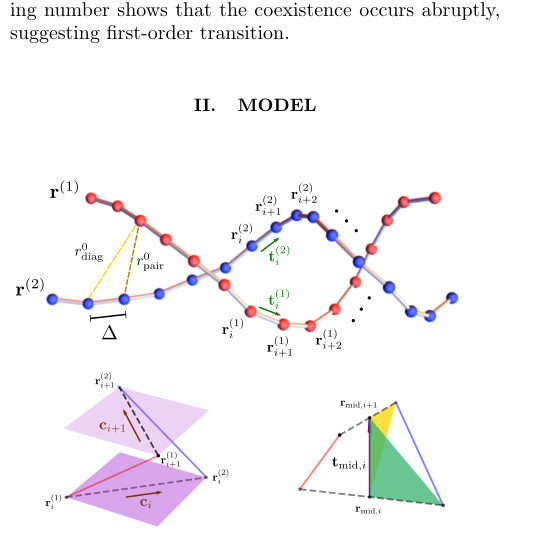
<figcaption class="paper-figure-caption"><b>Fig 1.</b> FIG. 1. (a) A model of two semiflexible chains, ri and ri+1, each consisting of vertices that are equally separated by ∆. The vertices {ri} are connected by tangent vector, i.e., ri+1 = ri + ∆· ti. The parameters r0 diag r0 pair are the equilibrium distance of pairs that are direct opposite and di- agonal opposite of each other, respectively. (b) A schematic diagram showing the counterclockwise rotation of successive corresponding vectors {ci} and the triangular planes whose normals are used to regulate the twist.</figcaption>
</figure>
<figure class="paper-figure-card">
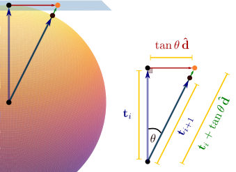
<figcaption class="paper-figure-caption"><b>Fig 2.</b> FIG. 2. A schematic diagram of a chain generating algorithm. The subsequent tangent vector ti+1 is determined as the pro- jection of the resultant vector of preceding tangent vector ti and displacement vector tan θ ˆd onto the surface of a unit sphere.</figcaption>
</figure>
<figure class="paper-figure-card">
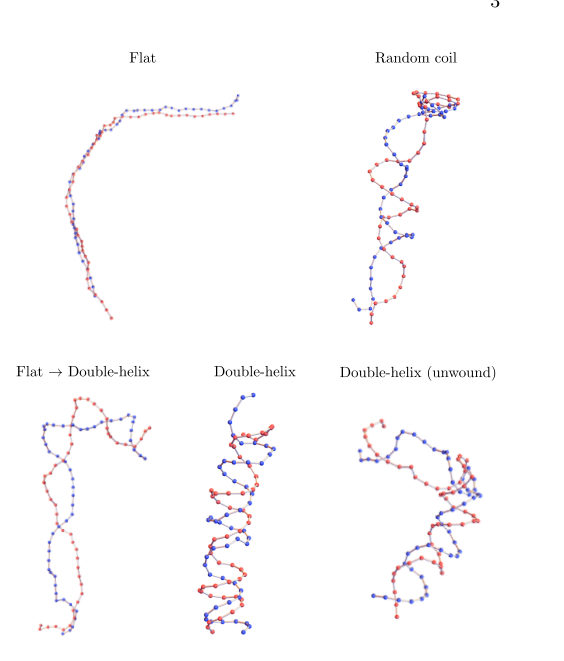
<figcaption class="paper-figure-caption"><b>Fig 3.</b> FIG. 3. Morphologically distinct configurations obtained from different values of P and D. The flat configuration corre- sponds to P = D = 0, while the random coil configuration corresponds to P = 0 and nonzero D. When both parame- ters are nonzero, the configuration adopts three different mor- phologies depending on the magnitude of P and D.</figcaption>
</figure>
<figure class="paper-figure-card">
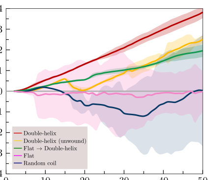
<figcaption class="paper-figure-caption"><b>Fig 4.</b> FIG. 4. The cumulative link function Lk(n) of configurations in different morphological phases. The link in double-helix phase (red) and during the transition (green) from flat to double-helix is linearly increasing along the configuration. In unwound double-helix phase, the nonlinear trends in Lk(n) corresponds to a ladder-like configuration. The link is rela- tively small in the flat phase (lavender) since the configura- tion rarely bends and twists. In the random coil phase (blue), Lk(n) fluctuates between positive and negative link since the configuration is allowed to twist freely in any direction since the handedness-symmetry is unbroken.</figcaption>
</figure>
<figure class="paper-figure-card">
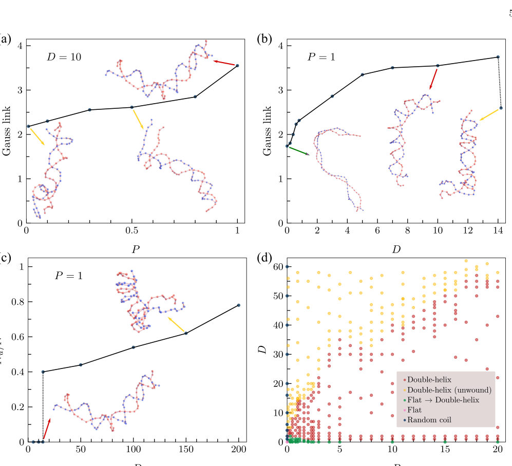
<figcaption class="paper-figure-caption"><b>Fig 5.</b> FIG. 5. Morphological phases of the model with different values of P and D: (a) When D = 10 is fixed, the configuration becomes right-handed spontaneously when P is no longer zero. The configuration is a partially unwound double-helix (yellow →), which eventually becomes full double-helix (red →) as P increases further. (b) When P = 1 fixed, the configuration with D = 0 has nonzero linking number (green →), which steadily (signified by the gradual rise in the Gauss link) becomes a double-helix as as D increases. As D increases further, the double-helix abruptly unwound. (c) Similar to (b) but instead of Gauss link, the quantity Nu/N which represents the fraction of unwound segments is used...</figcaption>
</figure>
</div>

<p><strong>Summary.</strong> This work models double-stranded semiflexible chains to understand how base-pairing and twisting energies dictate the overall helical structure. Using Monte Carlo simulations, the authors map out distinct morphological phases—including unwinding transitions—by tracking topological invariants like the Gauss linking number. The findings elucidate a delicate energetic balance governing structural stability in biopolymer systems.</p>
<p><strong>Why it may be interesting.</strong> While focused on biophysics (DNA), the methodology—using statistical mechanics tools like phase transition analysis, energy minimization across competing structural states, and topological diagnostics ($  ext{Lk}$)—is highly relevant for understanding complex many-body systems in AMO physics or quantum materials where local interactions drive global order.</p>
<details>
<summary>Detailed structure</summary>
<p><strong>Main problem.</strong> The study investigates the global morphological transitions of double-stranded semiflexible chains, specifically determining the balance required between base-pairing interactions and twisting energy to maintain the double-helix structure without external constraints.</p>
<p><strong>Main result.</strong> The model exhibits distinct phases (flat, random coil, double-helix, unwound) whose transitions are characterized by first-order changes in linking number. The system's stability is governed by minimizing total energy across these competing structural states.</p>
<p><strong>Method.</strong> Monte Carlo simulations using the Metropolis algorithm were employed to sample configurations based on a Hamiltonian incorporating bending, pairing, and twisting energies.</p>
<p><strong>Model / system.</strong> The physical system is modeled as two semiflexible chains interacting via base-pairing ($E_{	ext{pair}}$) and diagonal interactions ($E_{	ext{diag}}$), with handedness regulated by $E_{	ext{twist}}$. The total energy includes bending terms derived from the Kratky-Porod potential.</p>
<p><strong>Key observables.</strong> Gauss linking number ($    ext{Lk}$), Order Parameter ($  ext{Nu/N}$), correlation functions ($\langle t_n \cdot t_0 
angle$, $\langle c_n \cdot c_0 
angle$), and average energy per segment ($\epsilon$).</p>
<p><strong>Important parameters / regimes.</strong> Interaction strengths ($D$ for base-stacking, $P$ for twist symmetry breaking) and the dimensionless temperature parameter ($\Lambda = T/T_0$).</p>
<p><strong>Assumptions / limitations.</strong> Bending flexibility is assumed to follow the Kratky-Porod potential. The analysis relies on fitting correlation functions to damped oscillatory forms.</p>
<p><strong>Figures summary.</strong> Figures illustrate distinct morphologies based on varying interaction parameters ($P$ and $D$), plot the linking number ($ ext{Lk}(n)$) across different phases, and show temperature dependence of persistence lengths.</p>
<p><strong>Paper structure.</strong> The paper establishes the model Hamiltonian, uses Monte Carlo simulations to map out phase diagrams based on coupling constants ($D, P$), analyzes topological invariants like the linking number to pinpoint transitions, and finally examines thermal effects via correlation functions.</p>
</details>
<details>
<summary>Abstract</summary>
<p>The mechanical and structural properties of dsDNA have been successfully described by models with varying levels of complexity and coarse-graining schemes. Prior work has characterized local stacking/twist effects and force-torque phase diagrams under external constraints. However, the role of base-pairing and torsional elasticity in global morphological transitions remain poorly characterized in the absence of external constraints. Here we investigate the delicate balance required for the strength of base-pairing interactions and the twisting energy to preserve the double-helix structure in a model made up of two semiflexible chains. We found that the model exhibits several distinct morphological phases: flat, random coil, double-helix, and the unwound double-helix. We calculate the Gauss linking number to characterize transitions between these phases.</p>
</details>
<p><sub><a href="#top">↑ back to top</a></sub></p>

<p><a id="paper-2607.21315"></a></p>
<h3 id="a-single-length-scale-rules-ballistic-aggregation-travels-of-a-droplet-train"><a href="http://arxiv.org/abs/2607.21315v1">A single length scale rules ballistic aggregation: travels of a droplet train</a></h3>
<p><strong>Authors:</strong> Nathan Vani, Stefan Kooij, Aritro Mukherjee, Antoine Parrenin, Cees J. M. van Rijn, Daniel Bonn<br>
<strong>Type:</strong> both · <strong>Category:</strong> statistical mechanics · <strong>PDF:</strong> <a href="https://arxiv.org/pdf/2607.21315v1">https://arxiv.org/pdf/2607.21315v1</a><br>
<strong>Analysis basis:</strong> full PDF text, analyzed in chunks
<strong>Topic relevance:</strong> <code>non-equilibrium dynamics</code> <strong>3/5</strong> · <code>non-equilibrium universality</code> <strong>3/5</strong> · <code>driven-dissipative phase transition</code> <strong>2/5</strong> · <code>Frenkel-Kontorova</code> <strong>1/5</strong> · <code>Keldysh / 2PI / non-Gaussian methods</code> <strong>1/5</strong> · <code>analog quantum simulation</code> <strong>1/5</strong> · <code>correlated / nonlocal dissipation</code> <strong>1/5</strong> · <code>methods for driven-dissipative</code> <strong>1/5</strong></p>
<div class="figure-strip-hint">↔ Scroll figures horizontally</div>
<div class="paper-figures-scroll">
<figure class="paper-figure-card">
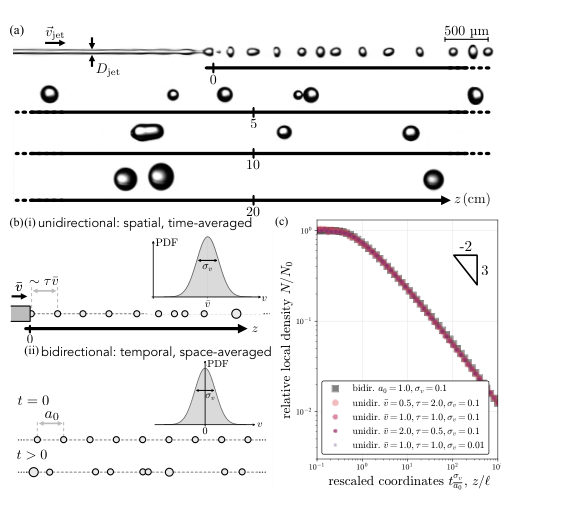
<figcaption class="paper-figure-caption"><b>Fig 1.</b> FIG. 1. (a) Inherently unstable, a liquid jet breaks up into a train of droplets. As we look further downstream of the train we see ever fewer and larger droplets. Corresponding videos are available as supplementary material. (b) We model the train as a ‘unidirectional’ ballistic aggregation process (i) of average speed ¯v with a standard deviation σv at z = 0 and an emission period τ. Measurements are localized in space. The system is equivalent to a ‘bidirectional’ one (ii) with a zero average speed in which measurements are localized in time – as long as the initial standard deviations in velocity match and the initial particle spacing a0 matches τ ¯v. (c) Collapse of local density N/N0...</figcaption>
</figure>
<figure class="paper-figure-card">
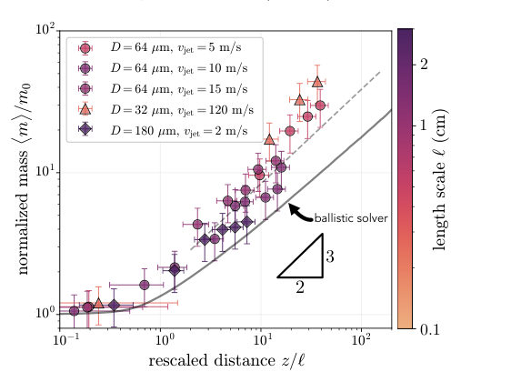
<figcaption class="paper-figure-caption"><b>Fig 2.</b> FIG. 2. Evolution of the average mass normalized by Rayleigh-Plateau prediction of the initial droplet mass m0 as a function of the rescaled distance z/ℓwith ℓshown in the colorbar, for several jet sizes and velocities. The full gray line is the prediction from the ballistic solver. The dashed line indicates a 2/3 slope, whereas individual fits of the slope av- erage 0.67 ± 0.08.</figcaption>
</figure>
<figure class="paper-figure-card">
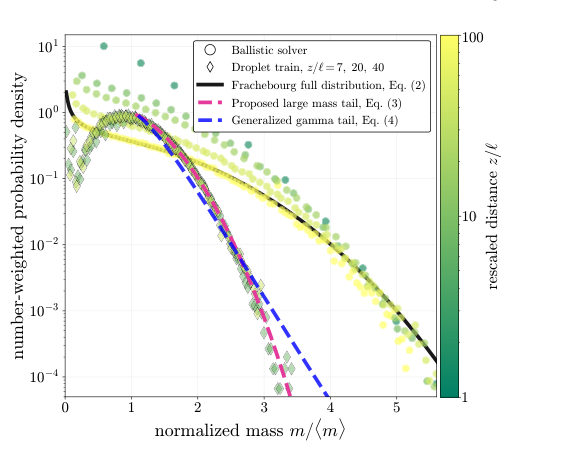
<figcaption class="paper-figure-caption"><b>Fig 3.</b> FIG. 3. Number-weighted probability density function of the normalized mass from simulations (circles) and experi- ments (diamonds). At large z/ℓ, the former agrees with the Frachebourg distribution (Eq. (2), black line). Experimen- tal data is narrower due to drag. We fit its tail successfully with the Frachebourg-derived proposed expression (Eq. 3, pink dashed line) and without success with a Smoluchowski- derived generalized gamma (Eq. 4, blue dashed line) – both are fitted with a free amplitude prefactor. Experimental data correspond to trains of droplets originating from a jet of di- ameter Djet = 64µm, at either vjet = 10 m/s (z/ℓ= 7) or vjet = 5 m/s (z/ℓ= 20, 40).</figcaption>
</figure>
<figure class="paper-figure-card">
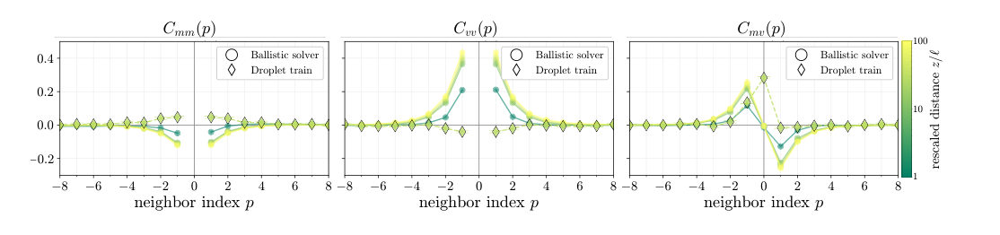
<figcaption class="paper-figure-caption"><b>Fig 4.</b> FIG. 4. Correlation coefficients from the simulations (circles) and from experiments (diamonds) Cmm, Cvv, Cmv for various neighbor index p, with p &gt; 0 denoting droplets farther downstream. Experimental data correspond to 400.000 droplets recorded for Djet = 64µm, vjet = 5m/s at z = 15 cm, corresponding to z/ℓ= 29. Trivial values of Cmm(0) = Cvv(0) = 1 are omitted. Further experimental measurements of correlation are shown in the SM.</figcaption>
</figure>
<figure class="paper-figure-card">
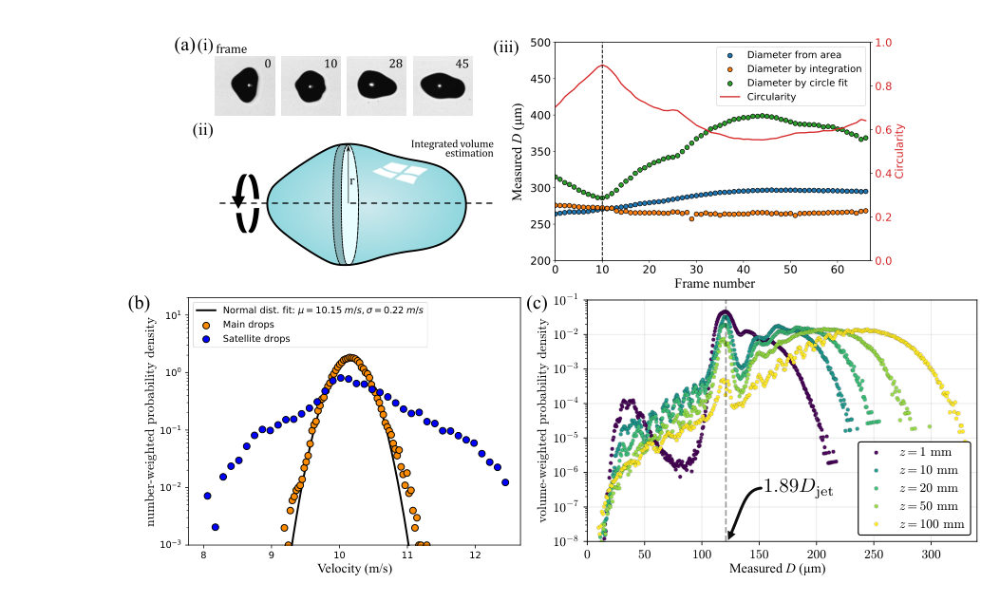
<figcaption class="paper-figure-caption"><b>Fig 5.</b> FIG. 5. (a) Visual volume-integration method. (i) Time sequence of an oscillating droplet resulting from a merging event. (ii) Integration of the volume of the droplet under assumption of axisymmetry. (iii) Apparent diameter of the droplet inferred from area-based projection, circular fits, and axisymmetric volume integration. Area-based and circular fit show variations of approximately 30 and 15%, whereas volume-integration varies only by about 8%. All methods agree when the droplet matches a spherical shape. (b) Velocity distributions of main (orange) and satellite (blue) droplets near jet breakup, for Djet = 64 µm and vjet = 10 m s−1. The main droplets follow a narrow normal...</figcaption>
</figure>
</div>

<p><strong>Summary.</strong> This work experimentally realizes and analyzes one-dimensional ballistic aggregation using a train of liquid droplets. The research confirms that the process follows predicted scaling laws governed by a single length scale, demonstrating that mean-field theories fail when directional memory is present in collisions.</p>
<p><strong>Why it may be interesting.</strong> Although focused on classical fluid dynamics, the failure of mean-field descriptions due to directional memory echoes challenges in modeling non-equilibrium quantum systems where simple approximations break down.</p>
<details>
<summary>Detailed structure</summary>
<p><strong>Main problem.</strong> The study investigates ballistic aggregation, a non-equilibrium process relevant across physics scales, by confirming theoretical scaling laws through experimental realization.</p>
<p><strong>Main result.</strong> The global aggregation process is shown to be governed by a single length scale, and the measured mass growth exponent matches the theoretically predicted value of 2/3.</p>
<p><strong>Method.</strong> The authors combine high-speed droplet tracking experiments with event-driven simulations to analyze particle mergers in one dimension.</p>
<p><strong>Model / system.</strong> The system models droplets aggregating ballistically from a liquid jet breakup, which is treated as a non-equilibrium process where collisions carry directional memory. The analysis compares this physical system against theoretical frameworks like CPY scaling and Frachebourg's analytical solutions.</p>
<p><strong>Key observables.</strong> Average particle mass growth ($\langle m 
angle$), number-weighted mass distribution function ($p(x)$), and correlation coefficients between neighboring particles (mass, velocity).</p>
<p><strong>Important parameters / regimes.</strong> The characteristic length scale $\ell = 	au ar{v}^2/\sigma_v$, jet parameters ($D_{	ext{jet}}, v_{	ext{jet}}$), and the exponent $2/3$.</p>
<p><strong>Assumptions / limitations.</strong> Air drag is included as a perturbation, but the 1D ordering constraint protects the bulk scaling characteristics. Mean-field descriptions (like Smoluchowski) are shown to fail due to directional memory.</p>
<p><strong>Figures summary.</strong> Figures show confirmation of the $2/3$ growth law via data collapse vs. rescaled coordinates, convergence of mass distributions to analytical solutions, and analysis of velocity correlations for simulations versus experiments.</p>
<p><strong>Paper structure.</strong> The paper establishes the physical relevance of ballistic aggregation, presents experimental measurements on droplet trains, confirms scaling laws using a single length scale $\ell$, analyzes fine-grained properties like mass distribution tails, and discusses deviations caused by air drag.</p>
</details>
<details>
<summary>Abstract</summary>
<p>Ballistic aggregation is a canonical non-equilibrium process, relevant across scales from granular gases to planetary accretion. Collisions are driven by differences in velocities, building up persistent correlations between neighbors. Here, we provide the first experimental realization of one-dimensional ballistic aggregation in a train of droplets formed by the breakup of a liquid jet. Experiments and simulations confirm the analytically predicted scaling, with the global process shown to be governed by a single length scale. While air drag inverts the sign of neighbor velocity correlations, a 1D ordering constraint protects bulk characteristics of ballistic aggregation such as the scaling exponent and the shape of the large mass tail. More broadly, our results show that Smoluchowski-like mean-field descriptions fail when collisions carry directional memory -- as demonstrated here for jet-generated sprays.</p>
</details>
<p><sub><a href="#top">↑ back to top</a></sub></p>

<p><a id="paper-2607.21528"></a></p>
<h3 id="probing-the-nonlocality-of-landau-levels-in-gaas-quantum-wells-through-modified-purcell-factors-lamb-shifts-and-dipole-emitted-spectra"><a href="http://arxiv.org/abs/2607.21528v1">Probing the nonlocality of Landau levels in GaAs quantum wells through modified Purcell factors, Lamb shifts and dipole emitted spectra</a></h3>
<p><strong>Authors:</strong> Lara Greten, Sabrina Meyer, Christina Schröder, Andreas Knorr, Stephen Hughes<br>
<strong>Type:</strong> theory · <strong>Category:</strong> other · <strong>PDF:</strong> <a href="https://arxiv.org/pdf/2607.21528v1">https://arxiv.org/pdf/2607.21528v1</a><br>
<strong>Analysis basis:</strong> full PDF text, analyzed in chunks
<strong>Topic relevance:</strong> <code>Keldysh / 2PI / non-Gaussian methods</code> <strong>3/5</strong> · <code>correlated / nonlocal dissipation</code> <strong>3/5</strong> · <code>methods for driven-dissipative</code> <strong>3/5</strong> · <code>Tavis-Cummings &amp; cavity-many-emitter</code> <strong>1/5</strong> · <code>correlated cavity matter</code> <strong>1/5</strong> · <code>interference shaping light</code> <strong>1/5</strong> · <code>spintronics-quantum-optics interface</code> <strong>1/5</strong></p>
<div class="figure-strip-hint">↔ Scroll figures horizontally</div>
<div class="paper-figures-scroll">
<figure class="paper-figure-card">
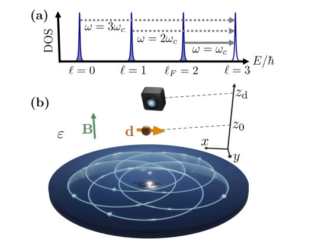
<figcaption class="paper-figure-caption"><b>Fig 1.</b> Figure 1: (a) LL density of states (DOS) for B = 5 T, indicating dipole-allowed (ℓ→ℓ+ 1 with ω = ωc, solid) and dipole-forbidden (ω = 2ωc and ω = 3ωc, dotted) transitions. Occupied LL up to ℓF are filled. (b) In-plane polarized point dipole d (orange) at z0 above a Landau-quantized 2DEG (blue) in the xy-plane subject to a perpendicular magnetic field B (green) in a dielectric environment with permittivity ε. A detector is indicated at zd.</figcaption>
</figure>
<figure class="paper-figure-card">
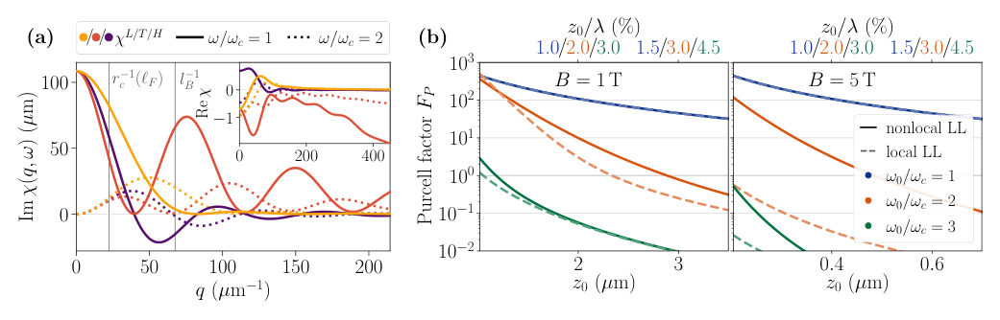
<figcaption class="paper-figure-caption"><b>Fig 2.</b> Figure 2: (a) Imaginary (inset: real) part of the longitudinal (L), transverse (T) and Hall (H) nonlocal susceptibility χL,T,H(q; ω) of a Landau-quantized 2DEG (GaAs quantum well) for B = 3 T and temperature T = 10 K over in-plane wavevector q for ω = ωc (solid) and ω = 2ωc (dashed). Grey vertical lines indicate the inverse maximal, rc(ℓF ), and minimal, rc(ℓ= 0) = lB, Larmor radius. (b) Purcell factor for a parallel dipole with frequency ω0 at z0 above a Landau-quantized 2DEG for B = 1 T (left) and B = 5 T (right). The dipole is chosen to be resonant with the dipole allowed transition ω0 = ωc(B) (solid blue), and two dipole forbidden transitions, ω0 = 2ωc(B) (solid orange) and ω0 = 3ωc(B)...</figcaption>
</figure>
<figure class="paper-figure-card">
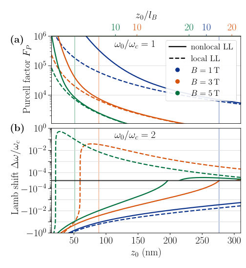
<figcaption class="paper-figure-caption"><b>Fig 3.</b> Figure 3: (a) / (b): Purcell factor / Lamb shift for an in-plane dipole with ω0 = ωc / ω0 = 2ωc in close proximity to a Landau-quantized 2DEG for magnetic field strengths B = [1 (blue) , 3 (orange) , 5 (green)] T. The vertical lines indicate twice the Larmor radius, 2rc(ℓF ), of the highest occupied LL. Parame- ters: temperature T = 10 K, dipole moment d = 100 enm.</figcaption>
</figure>
<figure class="paper-figure-card">
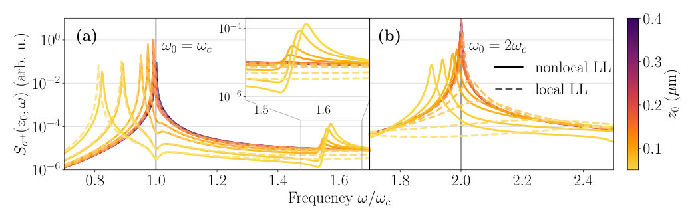
<figcaption class="paper-figure-caption"><b>Fig 4.</b> Figure 4: Emitted spectrum S of an in-plane circular polarized point dipole with dipole moment d = 100 enm and frequency (a) ω0 = ωc , and (b) ω0 = 2ωc, indicated by grey vertical lines at z0 above a Landau-quantized 2DEG (GaAs QW at temperature T = 10 K) for B = 3 T detected at zd = 5 mm (far-field) based on the nonlocal (solid) or local (dashed) LL response. The inset magnifies the collective magnetoplasmon resonance near 1.5-1.6ωc, appearing only in the nonlocal LL response (solid) for small z0. The discontinuity at the panel- intersection occurs since the panels depict spectra of dipoles with different resonance frequencies ω0.</figcaption>
</figure>
</div>

<p><strong>Summary.</strong> This paper develops a microscopic theory to analyze how the nonlocality of Landau levels affects electromagnetic interactions in 2DEG systems. By calculating observables like Purcell factors and Lamb shifts beyond local approximations, the authors demonstrate that spatial dispersion is crucial for accurately predicting light emission rates, especially for transitions forbidden under simple models.</p>
<p><strong>Why it may be interesting.</strong> This work provides a rigorous quantum electrodynamics treatment of confined electron systems in strong magnetic fields, which is highly relevant for understanding light-matter interactions in nanoscale solid-state devices and plasmonics.</p>
<details>
<summary>Detailed structure</summary>
<p><strong>Main problem.</strong> The study aims to theoretically probe the nonlocality of Landau levels (LLs) within a two-dimensional electron gas (2DEG) when subjected to strong perpendicular magnetic fields.</p>
<p><strong>Main result.</strong> Nonlocal effects significantly modify electromagnetic responses, leading to enhanced Purcell factors for dipole-forbidden transitions and revealing collective magnetoplasmon resonances absent in local approximations.</p>
<p><strong>Method.</strong> The authors derived the nonlocal susceptibility tensor ($\chi$) using a Green's function formalism beyond standard approximations (Markov/RWA) and applied it to calculate observables like Purcell factors and Lamb shifts.</p>
<p><strong>Model / system.</strong> The system is a 2DEG in GaAs quantum wells under a strong magnetic field, leading to quantized Landau levels. The theory models the response using a nonlocal susceptibility $\chi(q, \omega)$ derived from microscopic current density calculations.</p>
<p><strong>Key observables.</strong> Purcell factor ($F_P$), environment-induced Lamb shift ($\Delta\omega$), and dipole emitted spectra $S(\omega)$.</p>
<p><strong>Important parameters / regimes.</strong> Magnetic field strength (a few Tesla), relevant length scales up to hundreds of nanometers, cyclotron frequency ($\omega_c$).</p>
<p><strong>Assumptions / limitations.</strong> Calculations are performed beyond the Markov and rotating-wave approximations; the theory relies on decomposing the susceptibility into longitudinal, transverse, and Hall components.</p>
<p><strong>Figures summary.</strong> Figures compare local versus nonlocal predictions for Purcell factors and Lamb shifts across various frequencies ($\omega_c, 2\omega_c$), highlighting large deviations for forbidden transitions and showing spectral features like magnetoplasmon resonances.</p>
<p><strong>Paper structure.</strong> The paper develops the theoretical framework by deriving the Green's function and the full nonlocal susceptibility tensor $\chi(q, \omega)$, then applies this formalism to calculate key optical responses (Purcell factors, Lamb shifts) for comparison against local approximations.</p>
</details>
<details>
<summary>Abstract</summary>
<p>In a two-dimensional electron gas, a strong perpendicular magnetic field confines electrons to quantized cyclotron orbits, giving rise to Landau levels with discrete orbit radii. Even the smallest Landau orbit, set by the magnetic length, spans tens of nanometers for fields of a few Tesla, imposing an intrinsic nonlocal response to electromagnetic excitations. From a microscopic theory of the nonlocal susceptibility, we derive the Green's function, the central quantity governing all electromagnetic interactions, and evaluate Purcell factors, Lamb shifts, and emission spectra from a proximal dipole emitter beyond the Markov and rotating-wave approximations. Significant nonlocal effects resulting from spatial dispersion of the Landau level response modify the response for experimentally relevant situations up to distances of hundreds of nanometers and, in particular, brighten locally dipole-forbidden transitions due to near-field gradients at multiples of the cyclotron frequency. The relevant length scales are typical of state-of-the-art nanostructured terahertz architectures, and some of our nonlocal features are consistent with recent experiments using Landau level polaritons.</p>
</details>
<p><sub><a href="#top">↑ back to top</a></sub></p>

<p><a id="paper-2607.21490"></a></p>
<h3 id="strong-correlations-and-local-self-energies-from-on-site-ensembles"><a href="http://arxiv.org/abs/2607.21490v1">Strong correlations and local self-energies from on-site ensembles</a></h3>
<p><strong>Authors:</strong> Alberto Carta, Hugo U. R. Strand, Michael Schüler, Nicola Marzari<br>
<strong>Type:</strong> theory · <strong>Category:</strong> strongly correlated electrons · <strong>PDF:</strong> <a href="https://arxiv.org/pdf/2607.21490v1">https://arxiv.org/pdf/2607.21490v1</a><br>
<strong>Analysis basis:</strong> full PDF text, analyzed in chunks
<strong>Topic relevance:</strong> <code>Keldysh / 2PI / non-Gaussian methods</code> <strong>3/5</strong> · <code>methods for driven-dissipative</code> <strong>3/5</strong> · <code>Kondo &amp; dissipative impurity</code> <strong>2/5</strong> · <code>analog quantum simulation</code> <strong>2/5</strong> · <code>correlated / nonlocal dissipation</code> <strong>1/5</strong> · <code>correlated cavity matter</code> <strong>1/5</strong> · <code>driven-dissipative phase transition</code> <strong>1/5</strong></p>
<div class="figure-strip-hint">↔ Scroll figures horizontally</div>
<div class="paper-figures-scroll">
<figure class="paper-figure-card">
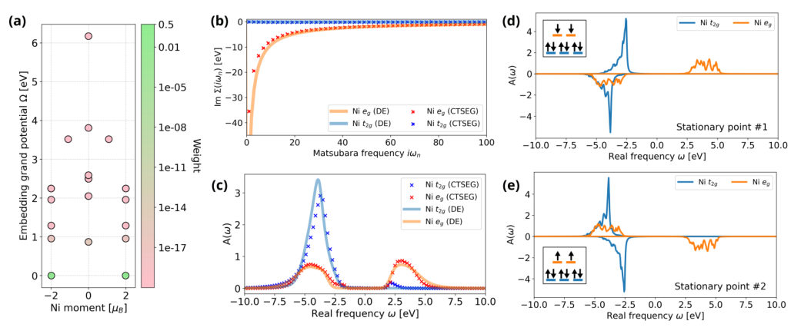
<figcaption class="paper-figure-caption"><b>Fig 1.</b> FIG. 1. Paramagnetic state of NiO: (a) embedding grand potential Ωlandscape. Marker color scales with Boltzmann weight; green circles identify the global minima that overwhelmingly dominate the ensemble average for this system; (b) imaginary part of the Matsubara self-energy, ImΣ(iωn); (c) spin-degenerate local spectral function, A(ω), obtained via analytic continuation; solid lines represent DE results and crosses denote continuous-time quantum Monte Carlo (CTSEG) benchmarks. Calculations employ a 5-orbital d-band model (U = 6 eV, J = 1 eV, β = 40 eV−1); (d,e) symmetry-broken spectral functions corresponding to the two lowest-energy stationary states from (a) resolving the spin-up...</figcaption>
</figure>
<figure class="paper-figure-card">
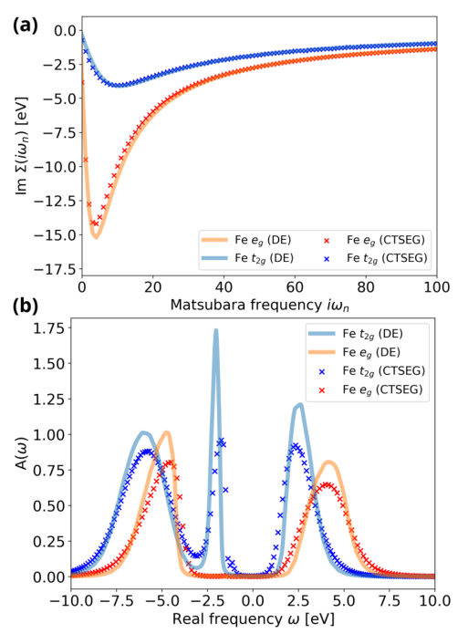
<figcaption class="paper-figure-caption"><b>Fig 2.</b> FIG. 2. Paramagnetic state of FeO, 5 orbital model with U = 6 eV and J = 1 eV and β = 40 eV−1: (a) imaginary part of the Matsubara self-energy ImΣ(iωn); (b) local spectral function A(ω) obtained via analytic continuation of the self- energy. DE results (solid lines) are compared against CTSEG benchmarks (crosses).</figcaption>
</figure>
</div>

<p><strong>Summary.</strong> This work introduces the On-site dephased ensemble (DE) approximation to tackle strongly correlated Mott insulators. By averaging over local static solutions, DE efficiently reproduces key signatures of strong correlations seen in DMFT. This offers a powerful, computationally cheaper alternative for studying these challenging electronic systems.</p>
<p><strong>Why it may be interesting.</strong> While focused on solid-state physics, the concept of describing a complex quantum state as an ensemble average over multiple localized configurations shares conceptual links with open quantum system descriptions and environmental coupling in AMO physics.</p>
<details>
<summary>Detailed structure</summary>
<p><strong>Main problem.</strong> The central challenge is accurately solving the many-body electronic structure problem, especially for paramagnetic Mott insulators which defy standard methods like DFT.</p>
<p><strong>Main result.</strong> The proposed On-site dephased ensemble (DE) approximation successfully recovers key features of strongly correlated Mott systems, matching DMFT results while offering a computationally efficient first-principles route.</p>
<p><strong>Method.</strong> The DE approximates the local electronic problem by treating it as a thermal ensemble over all accessible local static solutions, bypassing expensive quantum Monte Carlo or large supercell calculations.</p>
<p><strong>Model / system.</strong> The study focuses on paramagnetic Mott insulators, using models like NiO and FeO within a 5-orbital d-band framework governed by Hubbard interactions (U).</p>
<p><strong>Key observables.</strong> Local electronic self-energy ($\Sigma(\omega)$), local spectral function ($A(\omega)$), and the persistence of local moments.</p>
<p><strong>Important parameters / regimes.</strong> Hubbard interaction strength (e.g., U = 6 eV) and temperature/inverse temperature ($eta$).</p>
<p><strong>Assumptions / limitations.</strong> The DE neglects inter-basin tunneling between static solutions, making it an approximation valid in the limit of strong Hubbard U.</p>
<p><strong>Figures summary.</strong> Figures illustrate the grand potential landscape of local states, the imaginary part of the self-energy, and the resulting spectral functions for both the ensemble average and individual symmetry-broken states.</p>
<p><strong>Paper structure.</strong> The paper introduces the DE approximation by comparing it to DMFT and supercell methods. It then applies this method to paradigmatic Mott insulators (NiO, FeO), benchmarking its results against established DMFT calculations across various observables.</p>
</details>
<details>
<summary>Abstract</summary>
<p>Addressing the many-body electronic-structure problem is a central goal of modern condensed-matter physics. Paramagnetic Mott insulators, in particular, have long represented a challenge for standard approaches, such as density-functional theory. Historically, these systems have been tackled either by considering many-body dynamics, as in the case of dynamical mean-field theory (DMFT), or, more recently, by invoking a polymorphous description consisting of large supercells populated with static symmetry-broken motifs whose spatial average restores the paramagnetic state. Inspired by these viewpoints, we introduce the on-site dephased ensemble (DE) approximation, in which the local electronic-structure problem is described by a thermal ensemble of all accessible local static solutions; this gives rise to a strong frequency dependence of the local electronic self-energy, as seen in DMFT or in the coherent-potential approximation of disordered alloys. We show that the DE successfully recovers defining hallmarks of strongly correlated Mott systems, both in terms of the self-energy as well as the persistence of local moments in time, in quantitative agreement with DMFT. By bypassing expensive quantum Monte Carlo solvers or large supercell calculations, this approach offers efficient routes to treating paramagnetic Mott systems in a first-principles setting, and highlights a deeper connection between the physics of strong correlations and that of disorder.</p>
</details>
<p><sub><a href="#top">↑ back to top</a></sub></p>

<p><a id="paper-2607.20605"></a></p>
<h3 id="perturbatively-stable-self-correcting-classical-memory-from-gauge-averaging"><a href="http://arxiv.org/abs/2607.20605v1">Perturbatively Stable Self-Correcting Classical Memory from Gauge Averaging</a></h3>
<p><strong>Authors:</strong> Ryan Thorngren<br>
<strong>Type:</strong> theory · <strong>Category:</strong> statistical mechanics · <strong>PDF:</strong> <a href="https://arxiv.org/pdf/2607.20605v1">https://arxiv.org/pdf/2607.20605v1</a><br>
<strong>Analysis basis:</strong> full PDF text, analyzed in chunks
<strong>Topic relevance:</strong> <code>analog quantum simulation</code> <strong>3/5</strong> · <code>Keldysh / 2PI / non-Gaussian methods</code> <strong>1/5</strong> · <code>correlated / nonlocal dissipation</code> <strong>1/5</strong> · <code>driven-dissipative phase transition</code> <strong>1/5</strong> · <code>entanglement &amp; information structure</code> <strong>1/5</strong> · <code>exotic spin models in light-matter</code> <strong>1/5</strong> · <code>methods for driven-dissipative</code> <strong>1/5</strong> · <code>non-equilibrium dynamics</code> <strong>1/5</strong> · <code>non-equilibrium universality</code> <strong>1/5</strong> · <code>scars &amp; prethermalization</code> <strong>1/5</strong></p>
<div class="figure-strip-hint">↔ Scroll figures horizontally</div>
<div class="paper-figures-scroll">
<figure class="paper-figure-card">
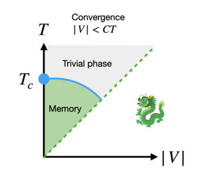
<figcaption class="paper-figure-caption"><b>Fig 1.</b> FIG. 1. Schematic phase diagram of stable memory as a func- tion of temperature T and strength of perturbation |V |. Veff defined by gauge averaging is local in the cone |V | &lt; CT (gray) and enjoys the local symmetry exactly. Here C is a geometric constant. If there is a local-symmetry-protected memory phase at V = 0 up to some Tc, then the memory persists to a fluctuation-stabilized phase in a wedge, as shown schematically in green. Outside this region, denoted by the dragon, we can no longer use our method to define a local Veff, and the memory can break down.</figcaption>
</figure>
</div>

<p><strong>Summary.</strong> This work proves the perturbative stability of self-correcting memory in 3D Wegner gauge theory using a novel technique called 'gauge averaging.' By showing that fluctuations effectively restore broken symmetries, the authors demonstrate that the system's topological information is robust against small perturbations. This establishes a quantitative understanding of how thermal fluctuations stabilize complex quantum phases.</p>
<p><strong>Why it may be interesting.</strong> The rigorous mathematical techniques used—especially gauge averaging and bottleneck analysis—provide powerful tools for analyzing the stability of topological order in lattice models, which has parallels in understanding quantum error correction codes (like the toric code).</p>
<details>
<summary>Detailed structure</summary>
<p><strong>Main problem.</strong> The primary goal is proving that the self-correcting memory inherent in 3D Wegner gauge theory remains stable even when subjected to small, arbitrary perturbations of its Hamiltonian.</p>
<p><strong>Main result.</strong> The authors prove that this self-correcting memory phase is robustly stable against weak perturbations, and furthermore, this robustness increases with temperature up to a critical point $T_c > 0$.</p>
<p><strong>Method.</strong> The core technique is 'gauge averaging,' which effectively restores broken gauge symmetries by averaging the system's state over the symmetry group. Stability is rigorously established by bounding the bottleneck ratio of the Markov chain, leading to an exponentially long mixing time.</p>
<p><strong>Model / system.</strong> The model is based on Wegner's 3D $\mathbb{Z}_2$ gauge theory, describing fluctuations on a lattice (like surfaces $S$). The system is analyzed using the Gibbs state derived from a perturbed Hamiltonian ($H_0 + V$), where $H_0$ relates to the boundary length of these fluctuating surfaces.</p>
<p><strong>Key observables.</strong> Self-correcting memory (exponentially long mixing time), topological winding number, and the bottleneck ratio $\mu(A[C]) / \mu(\partial A[C])$.</p>
<p><strong>Important parameters / regimes.</strong> Temperature ($T$ or $\beta$), perturbation strength ($|V|$), lattice size ($L$), and critical temperature ($T_c$).</p>
<p><strong>Assumptions / limitations.</strong> The proof assumes the symmetry group $G$ is finite abelian, that the perturbation $|V|$ is sufficiently weak relative to the temperature/parameters (e.g., $\beta|V|_{\eta} < C_{\text{gauge}}$), and relies on bounding sums over polymers using criteria like the KP criterion.</p>
<p><strong>Figures summary.</strong> Figure 1 schematically illustrates the phase diagram, showing that stable memory exists within a region defined by gauge averaging, bounded by regions where the mathematical method fails (the 'dragon').</p>
<p><strong>Paper structure.</strong> The paper develops the theory by first establishing bounds on the unperturbed system using Peierls arguments and bottleneck lemmas. It then introduces gauge averaging to handle perturbations, culminating in bounding the ratio of measures $\mu_G(\partial A[C]) / \mu_G(A[C])$ to prove exponential decay with system size $L$, thereby guaranteeing long mixing times.</p>
</details>
<details>
<summary>Abstract</summary>
<p>We show that the self-correcting memory in 3d Wegner gauge theory is stable to arbitrary small enough perturbations of the Hamiltonian. Our proof relies on a new method we dub ``gauge averaging'', which gives conditions under which explicitly broken gauge symmetries are effectively restored by fluctuations. These conditions show that the self-correcting memory phase is fluctuation stabilized, with its robustness to perturbations increasing with increasing temperature, up to some $T_c > 0$.</p>
</details>
<p><sub><a href="#top">↑ back to top</a></sub></p>

<p><a id="paper-2607.21569"></a></p>
<h3 id="a-geometric-framework-for-spin-relaxation"><a href="http://arxiv.org/abs/2607.21569v1">A geometric framework for spin relaxation</a></h3>
<p><strong>Authors:</strong> Sophia N. Fricke, Kieren A. Harkins, Ashok Ajoy, Jeffrey A. Reimer<br>
<strong>Type:</strong> both · <strong>Category:</strong> other · <strong>PDF:</strong> <a href="https://arxiv.org/pdf/2607.21569v1">https://arxiv.org/pdf/2607.21569v1</a><br>
<strong>Analysis basis:</strong> full PDF text, analyzed in chunks
<strong>Topic relevance:</strong> <code>methods for driven-dissipative</code> <strong>3/5</strong> · <code>Keldysh / 2PI / non-Gaussian methods</code> <strong>2/5</strong> · <code>driven-dissipative phase transition</code> <strong>2/5</strong> · <code>correlated / nonlocal dissipation</code> <strong>1/5</strong> · <code>non-equilibrium dynamics</code> <strong>1/5</strong> · <code>quantum measurements</code> <strong>1/5</strong> · <code>spintronics-quantum-optics interface</code> <strong>1/5</strong></p>
<div class="figure-strip-hint">↔ Scroll figures horizontally</div>
<div class="paper-figures-scroll">
<figure class="paper-figure-card">
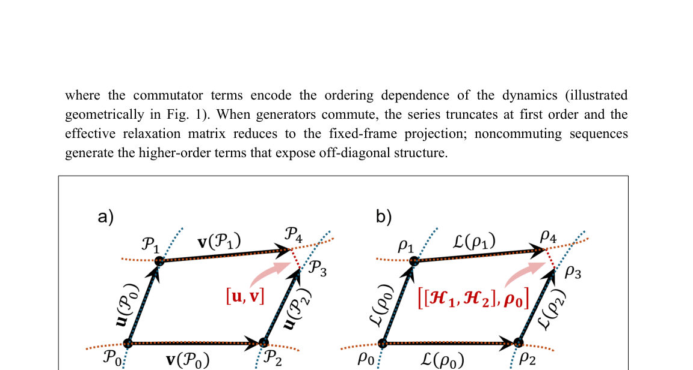
<figcaption class="paper-figure-caption"><b>Fig 1.</b> Fig. 1. Commutators as geometric transport. (a) In general, for two vector fields 𝑢 and 𝑣, transporting a point first along 𝑢 and then 𝑣 does not necessarily return to the same location as transporting in the opposite order. The resulting failure of the quadrilateral to close defines the commutator [𝑢, 𝑣], providing a geometric measure of curvature. (b) The same construction applies in Liouville space, where superoperators act as vector fields on the density operator 𝜌. The closure defect becomes a double commutator, linking noncommuting generators to curvature-like evolution. Relaxation shrinks this loop, representing entropy production and energy exchange. Further mathematical description...</figcaption>
</figure>
<figure class="paper-figure-card">
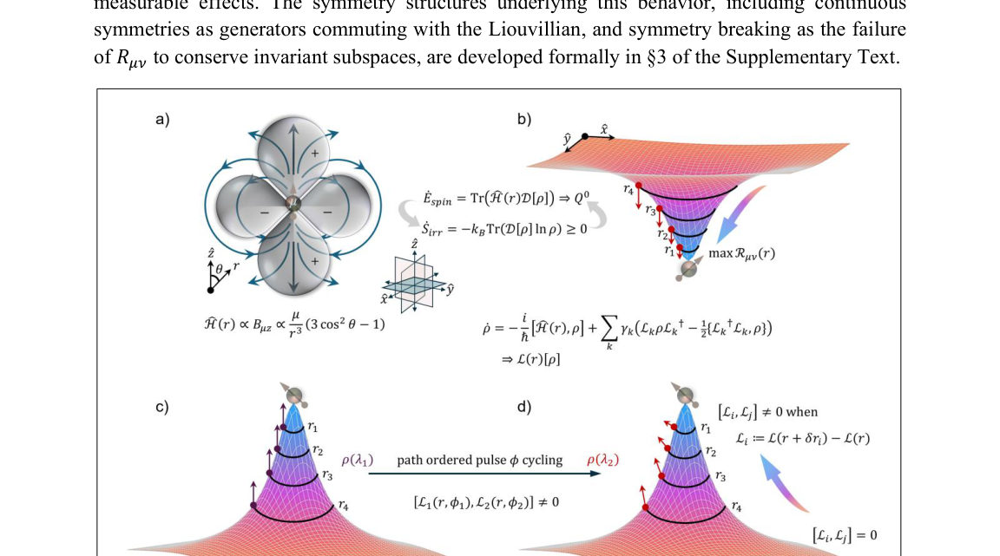
<figcaption class="paper-figure-caption"><b>Fig 2.</b> Fig. 2. Field of local superoperators whose curvature is sourced by spatially variant relaxation dissipators and anisotropic dipolar Hamiltonians. (a) Dipolar Hamiltonian modeled by a central unpaired electron (e.g., a paramagnetic center or nitrogen vacancy) whose radial and angular dependence is given by ℋ̂(𝑟) ∝</figcaption>
</figure>
<figure class="paper-figure-card">
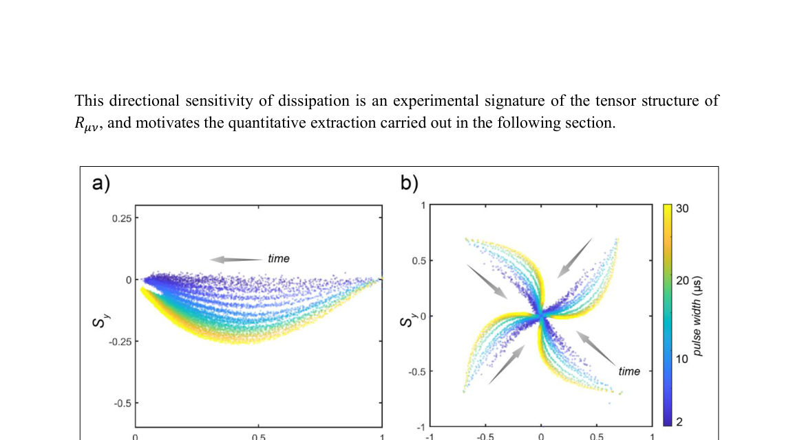
<figcaption class="paper-figure-caption"><b>Fig 3.</b> Fig. 3. Spin trajectories reveal generator commutation. (a) Transverse plane trajectory for pulse trains with effectively commuting generators, consisting of an initial pulse along 𝑦 followed by repeated pulses along 𝑥 for 13C nuclear spins in diamond with nitrogen-vacancy (NV) centers. Trajectories are shown for pulse widths ranging from 2 μs (purple) to 30 μs (yellow). The effect of transmitter frequency offsets from −5 to +5 kHz is shown in the Supplementary Materials. (b) Transverse plane trajectory for noncommuting pulse trains, consisting of an initial 𝜋/2 pulse along 𝑦 followed by a repeating (𝑥, 𝑦, −𝑥, −𝑦) sequence. Pulse widths again range from 2 μs (purple) to 30 μs (yellow). The...</figcaption>
</figure>
<figure class="paper-figure-card">
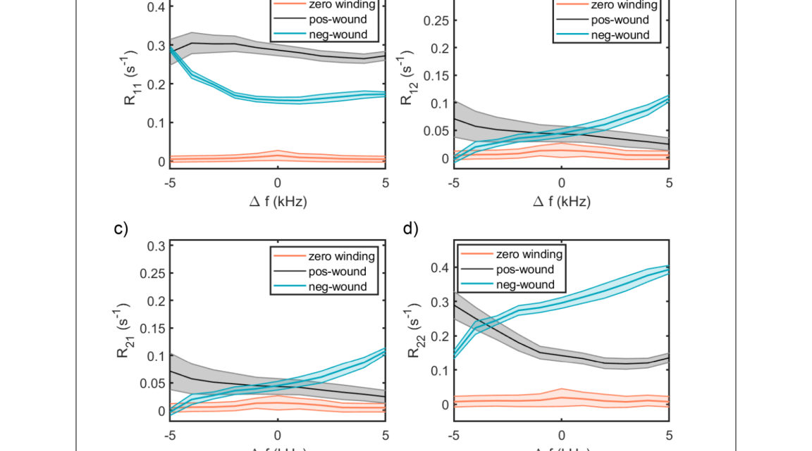
<figcaption class="paper-figure-caption"><b>Fig 4.</b> Fig. 4. Effect of generator commutation on projected relaxation tensor components. For 13C nuclear spins in diamond with NV centers, (a) 𝑅11, (b) R12, (c) R21, and (d) R22 are shown for commuting (zero-winding, red) and noncommuting (positive and negative phase-wound, in gray and blue, respectively) pulse trains as a function of transmitter offset frequency. These measured 𝑅 represent effective transverse dissipative projections of the Floquet generator. The shaded regions represent standard error, and fits were averaged across pulse widths from 2 to 30 μs as reported in Eq. (14).</figcaption>
</figure>
<figure class="paper-figure-card">
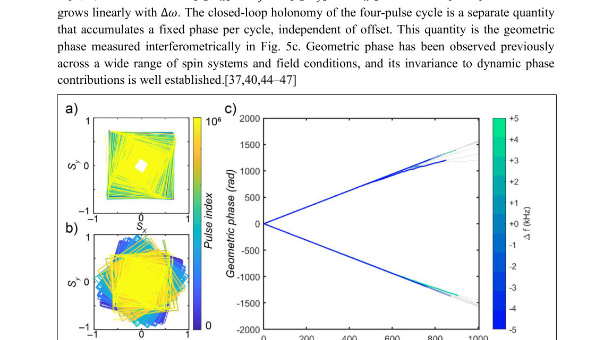
<figcaption class="paper-figure-caption"><b>Fig 5.</b> Fig. 5. Holonomy and parallel transport in spin dynamics. (a) Continuous transverse plane trajectory corresponding to resonant excitation as shown in Fig. 3b. (b) The effect of introducing a 4 kHz transmitter frequency offset on the pulse train shown in (a) with continuous positive phase winding of (𝑥, 𝑦, −𝑥, −𝑦) . (c) Geometric phase extracted interferometrically from positive and negative phase winding experiments, referenced to a zero winding (commuting, all 𝑥 pulses), for transmitter offsets ranging from −5 kHz to +5 kHz in 1 kHz steps. Notably, geometric phase is robust to the effects of dynamic phase and relaxation, and continues accumulating identically until degradation of SNR (gray...</figcaption>
</figure>
</div>

<p><strong>Summary.</strong> The paper proposes a geometric framework to unify spin relaxation theory by replacing separate $R_1$ and $R_2$ rates with a single covariant relaxation tensor ($\mathcal{R}_{\mu
u}$). By using noncommuting pulse sequences on hyperpolarized spins in diamond, the authors experimentally demonstrate that off-diagonal coupling terms exist, proving that relaxation is a directional process governed by this underlying tensor structure.</p>
<p><strong>Why it may be interesting.</strong> This work provides a powerful, coordinate-independent mathematical language for open quantum systems, unifying disparate descriptions (Bloch/Redfield/Lindblad) by treating relaxation as a tensor field on the state manifold. This has direct implications for understanding decoherence in solid-state qubits and quantum sensing.</p>
<details>
<summary>Detailed structure</summary>
<p><strong>Main problem.</strong> The conventional description of spin relaxation separates longitudinal ($R_1$) and transverse ($R_2$) rates phenomenologically, obscuring a deeper structural unity.</p>
<p><strong>Main result.</strong> Relaxation is fundamentally governed by a single covariant tensor ($\mathcal{R}_{\mu
u}$), which can be experimentally accessed by using noncommuting pulse sequences that reveal off-diagonal coupling terms.</p>
<p><strong>Method.</strong> The authors develop a geometric framework to describe dissipation in Liouville space, utilizing experimental measurements on spin systems subjected to noncommuting control pulses and measuring accumulated geometric phase (holonomy).</p>
<p><strong>Model / system.</strong> The system is spin relaxation dynamics, modeled by the evolution of the density operator $\dot{
ho} = -i/\hbar[\hat{H}(r), 
ho] + \mathcal{D}(
ho)$. The framework unifies Bloch, Redfield, and Lindblad descriptions using a covariant relaxation tensor.</p>
<p><strong>Key observables.</strong> Covariant relaxation tensor ($\mathcal{R}<em ij>{\mu
u}$), effective relaxation matrices ($R</em>$), geometric phase accumulation (holonomy).}^{   ext{eff}</p>
<p><strong>Important parameters / regimes.</strong> Noncommuting pulse sequences, transmitter frequency offset ($\Delta\omega$), hyperpolarized ${}^{13}	ext{C}$ spins in diamond with NV centers.</p>
<p><strong>Assumptions / limitations.</strong> The conventional $R_1$/$R_2$ separation is an approximation that fails in driven or anisotropic regimes where the full tensorial nature must be considered.</p>
<p><strong>Figures summary.</strong> Figures illustrate how commuting generators yield smooth, single-axis contraction of spin trajectories, whereas noncommuting generators produce multi-lobed patterns due to ordering dependence (commutator terms).</p>
<p><strong>Paper structure.</strong> The paper establishes the geometric framework by identifying the covariant relaxation tensor ($\mathcal{R}_{\mu
u}$), shows how this tensor is probed experimentally using noncommuting pulse sequences in diamond NV centers, and confirms that geometric phase accumulation provides an independent diagnostic of non-dissipative dynamics.</p>
</details>
<details>
<summary>Abstract</summary>
<p>Spin relaxation is conventionally described by two independent phenomenological rates - longitudinal ($R_1$) and transverse ($R_2$) - whose separation obscures a deeper structural unity. Here we develop a geometric framework in which dissipation is represented by a single covariant relaxation tensor acting in Liouville space, from which $R_1$ and $R_2$ emerge as complementary projections. This tensor structure is not merely formal but is experimentally accessible through pulse sequences that probe noncommuting directions in spin space. Using hyperpolarized $^{13}C$ spins in diamond with nitrogen-vacancy centers, we show that commuting pulse trains yield effective relaxation matrices that are approximately diagonal, while noncommuting sequences produce off-diagonal components that vary with transmitter frequency offset and pulse ordering, providing evidence that relaxation is a directional process governed by a tensor rather than a pair of scalar rates. Complementary measurements of geometric phase demonstrate that noncommuting dynamics introduce ordering-dependent effects that are separable from dissipation, consistent with the interpretation of relaxation as geometric transport on the state manifold. This framework unifies Bloch, Redfield, and Lindblad descriptions within a coordinate-independent formulation and provides a natural language for relaxation in driven, anisotropic, and non-equilibrium spin systems.</p>
</details>
<p><sub><a href="#top">↑ back to top</a></sub></p>

<p><a id="paper-2607.20815"></a></p>
<h3 id="an-operational-resolution-of-the-third-particle-paradox"><a href="http://arxiv.org/abs/2607.20815v1">An Operational Resolution of the Third-Particle Paradox</a></h3>
<p><strong>Authors:</strong> Časlav Brukner, Esteban Castro-Ruiz, Marius Krumm<br>
<strong>Type:</strong> theory · <strong>Category:</strong> other · <strong>PDF:</strong> <a href="https://arxiv.org/pdf/2607.20815v1">https://arxiv.org/pdf/2607.20815v1</a><br>
<strong>Analysis basis:</strong> full PDF text, analyzed in chunks
<strong>Topic relevance:</strong> <code>quantum measurements</code> <strong>3/5</strong> · <code>measurement-induced transitions</code> <strong>2/5</strong> · <code>Keldysh / 2PI / non-Gaussian methods</code> <strong>1/5</strong> · <code>correlated / nonlocal dissipation</code> <strong>1/5</strong> · <code>driven-dissipative phase transition</code> <strong>1/5</strong> · <code>entanglement &amp; information structure</code> <strong>1/5</strong> · <code>methods for driven-dissipative</code> <strong>1/5</strong> · <code>non-equilibrium dynamics</code> <strong>1/5</strong></p>
<div class="figure-strip-hint">↔ Scroll figures horizontally</div>
<div class="paper-figures-scroll">
<figure class="paper-figure-card">
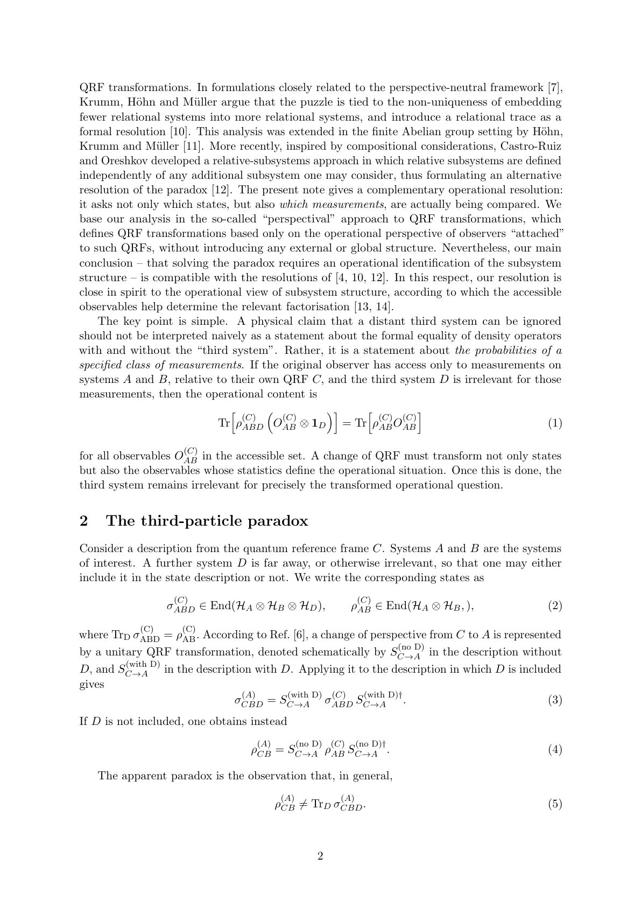
<figcaption class="paper-figure-caption"><b>Fig 1.</b> Low-resolution page preview, page 2</figcaption>
</figure>
<figure class="paper-figure-card">
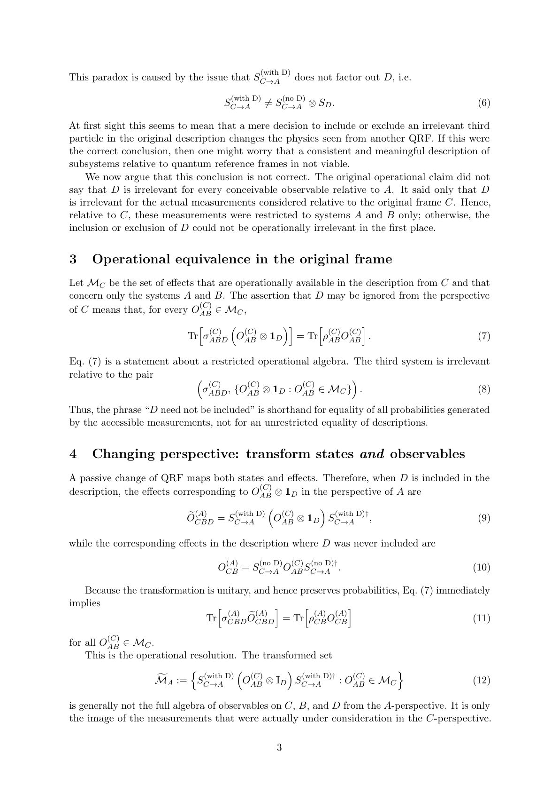
<figcaption class="paper-figure-caption"><b>Fig 2.</b> Low-resolution page preview, page 3</figcaption>
</figure>
<figure class="paper-figure-card">
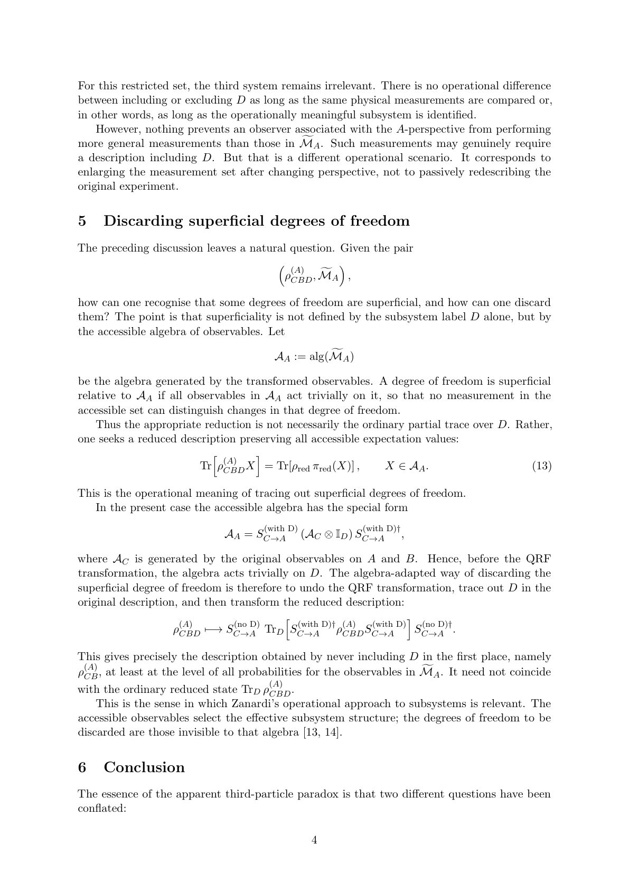
<figcaption class="paper-figure-caption"><b>Fig 3.</b> Low-resolution page preview, page 4</figcaption>
</figure>
<figure class="paper-figure-card">
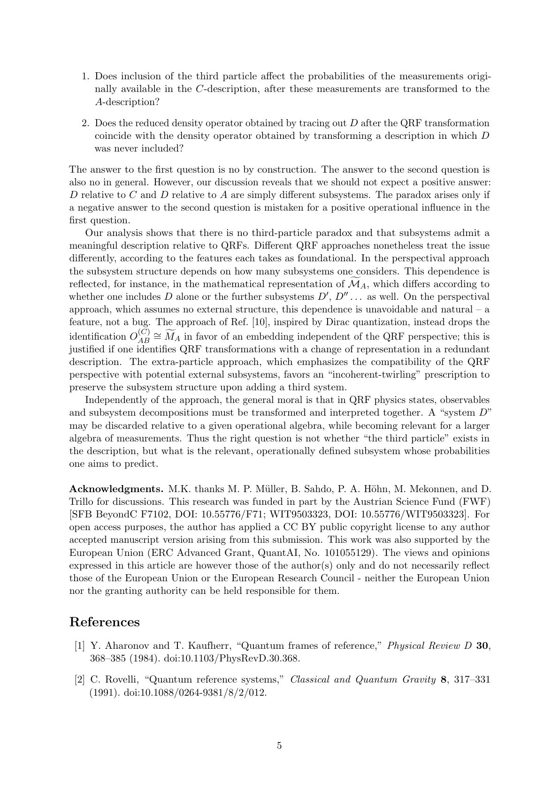
<figcaption class="paper-figure-caption"><b>Fig 4.</b> Low-resolution page preview, page 5</figcaption>
</figure>
<figure class="paper-figure-card">
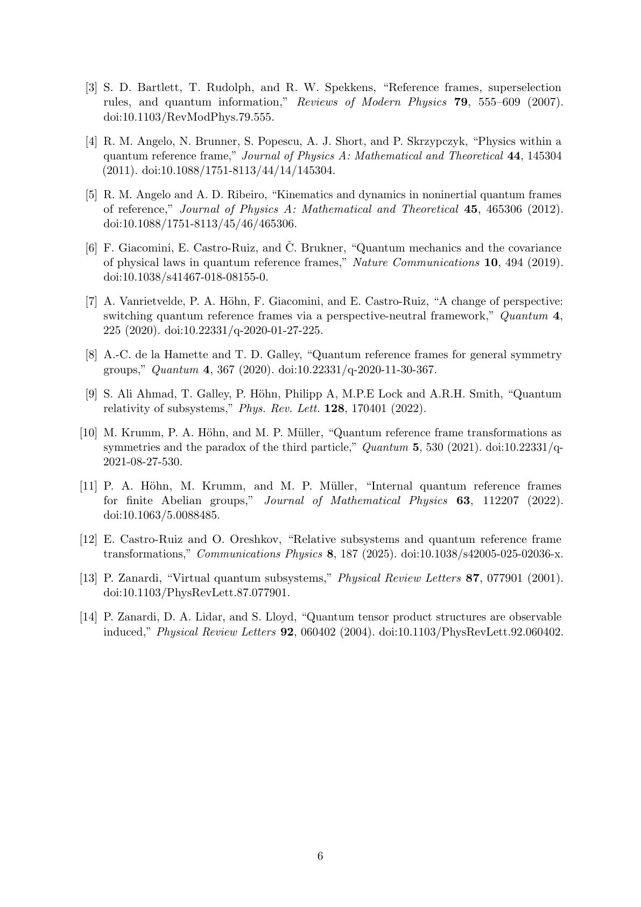
<figcaption class="paper-figure-caption"><b>Fig 5.</b> Low-resolution page preview, page 6</figcaption>
</figure>
</div>

<p><strong>Summary.</strong> This paper resolves the third-particle paradox in Quantum Reference Frames by shifting focus from formal equality of reduced density operators to operational constraints on measurable probabilities. It argues that irrelevance must be defined relative to the set of actually accessible measurements, providing a robust method for defining subsystem structure across different quantum descriptions.</p>
<p><strong>Why it may be interesting.</strong> This work is highly relevant to theoretical quantum physics dealing with open systems and subsystem decomposition, as it provides a rigorous framework for defining physical relevance when multiple reference frames or subsystems are involved.</p>
<details>
<summary>Detailed structure</summary>
<p><strong>Main problem.</strong> The paper resolves the 'third-particle paradox' that arises when describing quantum systems across different Quantum Reference Frames (QRFs). The paradox concerns apparent inconsistencies in subsystem descriptions when a system deemed irrelevant in one frame appears relevant after transformation to another.</p>
<p><strong>Main result.</strong> The paradox is resolved by arguing that physical claims of irrelevance must be interpreted operationally—based on the measurable probabilities of available observables—rather than through formal algebraic equalities of reduced density operators. The correct focus is on the restricted algebra generated by accessible measurements.</p>
<p><strong>Method.</strong> The authors employ an operational approach, comparing predicted probabilities for a set of relevant observables ($\mathcal{M}_A$) across different QRF descriptions rather than equating the full reduced states directly.</p>
<p><strong>Model / system.</strong> The theoretical framework involves quantum systems partitioned into multiple subsystems (e.g., A, B, C, D) undergoing transformations between Quantum Reference Frames (QRFs).</p>
<p><strong>Key observables.</strong> Accessible observables ($\mathcal{M}_C$), reduced density operators ($
ho(A)$), and the comparison of probabilities derived from these measurements.</p>
<p><strong>Important parameters / regimes.</strong> The structure of the accessible algebra $   ext{alg}(\dots)$, which dictates which degrees of freedom are physically measurable or relevant.</p>
<p><strong>Assumptions / limitations.</strong> Physical claims regarding subsystem structure must be interpreted as statements about probabilities for a specified set of measurements, not formal equalities between density operators.</p>
<p><strong>Paper structure.</strong> The paper first defines the paradox in QRFs by comparing two procedures for tracing out an irrelevant particle. It then develops the operational resolution by focusing on the restricted algebra generated by measurable observables, concluding that this operational constraint avoids the formal contradiction.</p>
</details>
<details>
<summary>Abstract</summary>
<p>We give an operational resolution of the third-particle paradox, relevant in the theory of quantum reference frames. The apparent paradox is that a system which is irrelevant in one quantum-reference-frame description can seem to become relevant after changing to another quantum reference frame, because the reduced state obtained after transforming a larger system need not agree with the state obtained by first discarding the extra system and then transforming. We argue that this comparison is not operationally meaningful unless the observables are transformed together with the states, or equivalently, unless the subsystem that needs to be discarded is properly identified. If the third particle is irrelevant for all measurements actually available in the original frame, then the transformed measurements form a restricted algebra in the new frame for which the third particle remains irrelevant. The paradox therefore results from replacing an operational statement about probabilities by a stronger, representation-dependent statement about equality of reduced density operators. We close by relating the question of when degrees of freedom may be discarded to the observable-induced, operational approach to subsystem structure.</p>
</details>
<p><sub><a href="#top">↑ back to top</a></sub></p>

<p><a id="paper-2607.20867"></a></p>
<h3 id="graviton-induced-which-path-decoherence-in-matter-wave-interferometry"><a href="http://arxiv.org/abs/2607.20867v1">Graviton-induced which-path decoherence in matter-wave interferometry</a></h3>
<p><strong>Authors:</strong> Hiroki Matsui<br>
<strong>Type:</strong> theory · <strong>Category:</strong> other · <strong>PDF:</strong> <a href="https://arxiv.org/pdf/2607.20867v1">https://arxiv.org/pdf/2607.20867v1</a><br>
<strong>Analysis basis:</strong> full PDF text, analyzed in chunks
<strong>Topic relevance:</strong> <code>Keldysh / 2PI / non-Gaussian methods</code> <strong>3/5</strong> · <code>methods for driven-dissipative</code> <strong>2/5</strong> · <code>quantum measurements</code> <strong>2/5</strong> · <code>correlated / nonlocal dissipation</code> <strong>1/5</strong> · <code>driven-dissipative phase transition</code> <strong>1/5</strong> · <code>entanglement &amp; information structure</code> <strong>1/5</strong> · <code>interference shaping light</code> <strong>1/5</strong></p>
<div class="figure-strip-hint">↔ Scroll figures horizontally</div>
<div class="paper-figures-scroll">
<figure class="paper-figure-card">
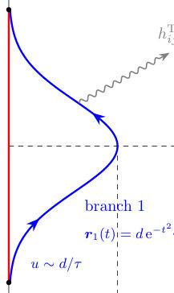
<figcaption class="paper-figure-caption"><b>Fig 1.</b> FIG. 1. Schematic of the which-path configuration. Branch 2 (red) remains at the origin, r2(t) = 0, while branch 1 (blue) follows the smooth Gaussian excursion r1(t) = d e−t2/(2τ2)e of Eq. (42), reaching the maximum separation d at t = 0 with characteristic velocity u ∼d/τ. The branches coincide asymptotically. The difference source produces TT radiation, and the corresponding branch-conditioned field states carry which-path information; tracing out the gravitons reduces the interference visibility by e−Γ.</figcaption>
</figure>
<figure class="paper-figure-card">
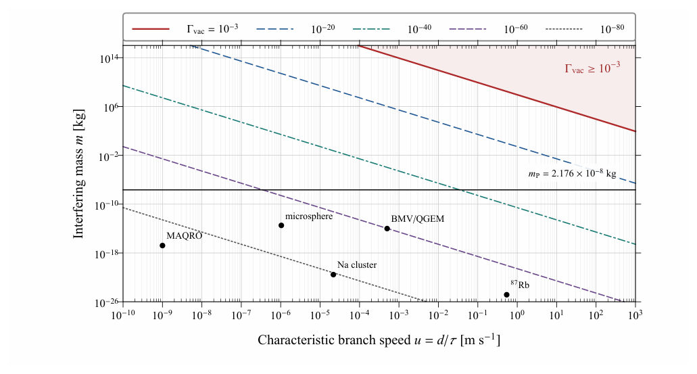
<figcaption class="paper-figure-caption"><b>Fig 2.</b> FIG. 2. Mass–kinematic-scale dependence of vacuum graviton decoherence in the Gaussian quadrupole model. The descending contours show the interfering mass m required to obtain fixed values of Γvac as a function of the characteristic branch speed u = d/τ, as determined by Eq. (49). The thick red contour and the lightly shaded region indicate the optimistic detection threshold Γvac ≥10−3. The horizontal black line marks the Planck mass mP. The markers represent the experimental proxies listed in Table I, with their horizontal coordinates evaluated from u = d/τ.</figcaption>
</figure>
</div>

<p><strong>Summary.</strong> This theoretical paper calculates how quantum gravity effects, specifically graviton emission, cause which-path decoherence in matter-wave interferometry. By analyzing the vacuum and squeezed states of the gravitational field, the authors derive quantitative estimates for the decoherence exponent. The main conclusion is that this effect is far too small to be measured by current or foreseeable experimental setups.</p>
<p><strong>Why it may be interesting.</strong> While not directly focused on AMO platforms like trapped ions or cold atoms, the methodology of calculating decoherence by tracing out environmental degrees of freedom (here, gravitons) is highly relevant to open quantum systems theory and quantum optics.</p>
<details>
<summary>Detailed structure</summary>
<p><strong>Main problem.</strong> The paper investigates which-path decoherence experienced by matter waves passing through an interferometer due to coupling with quantum gravitational fields (gravitons). It quantifies this effect by tracing out the graviton degrees of freedom.</p>
<p><strong>Main result.</strong> The calculated decoherence exponent ($\Gamma$) for both vacuum and inflationary squeezed states is found to be extremely small, concluding that graviton-induced decoherence is negligible in current matter-wave interferometers.</p>
<p><strong>Method.</strong> The analysis uses quantum field theory techniques, deriving the reduced coherence factor by tracing out the gravitons from the system's evolution operator. This involves calculating vacuum expectation values and utilizing displacement operators for squeezed states.</p>
<p><strong>Model / system.</strong> The model is a matter-wave interferometer (two semiclassical branches) coupled linearly to linearized quantum gravity fields (gravitons). The calculations are performed in Minkowski spacetime, considering both standard vacuum fluctuations and highly squeezed states relevant to inflation.</p>
<p><strong>Key observables.</strong> The primary observable is the decoherence exponent $\Gamma = -\ln |D|$, which quantifies the reduction in interference visibility. Other key observables include the coherence factor $D$ and the radiated graviton energy/number.</p>
<p><strong>Important parameters / regimes.</strong> Key parameters include the gravitational constant ($G$), mass ($m$), separation distance ($d$), time scale ($   au$), and cosmological parameters related to inflation ($\Omega_{   ext{inf}}, H_0$).</p>
<p><strong>Assumptions / limitations.</strong> The analysis assumes a conserved source stress tensor, restricts attention to propagating gravitons in Minkowski spacetime, and employs approximations derived from the low-energy effective field theory of gravity.</p>
<p><strong>Figures summary.</strong> Figures illustrate the schematic setup of the which-path configuration (Gaussian excursion) and show the dependence of decoherence on mass and kinematic scales. Tables provide order-of-magnitude estimates for $\Gamma$ across various experimental platforms.</p>
<p><strong>Paper structure.</strong> The paper builds from deriving the general formalism using displacement operators, calculating the vacuum case ($\Gamma_{	ext{vac}}$), extending the analysis to general squeezed states, and finally specializing to inflationary squeezing ($\Gamma_{	ext{inf}}$) to compare all contributions against experimental limits.</p>
</details>
<details>
<summary>Abstract</summary>
<p>We derive which-path decoherence for matter-wave interferometry that arises from tracing out the gravitons of linearized quantum gravity. Because the gravitons are driven linearly by the matter source, the branch-dependent evolution can be solved exactly, and the reduced coherence is given by the characteristic function of the initial graviton state, evaluated at the difference of the branch-induced field displacements. In vacuum, the decoherence exponent equals half the mean number of gravitons radiated by the difference source. For a smooth Gaussian trajectory, it reduces to $Γ_{\rm vac}=(8/15)\,Gm^2d^4/(\hbar c^5τ^4)$, ranging from $10^{-89}$ to $10^{-61}$ across representative matter-wave platforms. For a general squeezed graviton vacuum, we obtain an exact expression in which squeezing either suppresses or enhances the vacuum response, depending on the squeezing phase. For the strongly squeezed state produced by inflation, this expression reduces to $Γ_{\rm inf}=(π/20)\,Ω_{\rm inf}(md^2H_0/\hbar)^2$ and reaches at most $\sim10^{-27}$ for optimistic parameters. Hence, the which-path decoherence induced by radiative gravitons is therefore negligible in current matter-wave interferometers.</p>
</details>
<p><sub><a href="#top">↑ back to top</a></sub></p>

<p><a id="paper-2607.20623"></a></p>
<h3 id="learning-the-closest-slater-determinant"><a href="http://arxiv.org/abs/2607.20623v1">Learning the closest Slater determinant</a></h3>
<p><strong>Authors:</strong> Nisarga Paul, Haimeng Zhao, David D. Dai<br>
<strong>Type:</strong> theory · <strong>Category:</strong> strongly correlated electrons · <strong>PDF:</strong> <a href="https://arxiv.org/pdf/2607.20623v1">https://arxiv.org/pdf/2607.20623v1</a><br>
<strong>Analysis basis:</strong> full PDF text, analyzed in chunks
<strong>Topic relevance:</strong> <code>analog quantum simulation</code> <strong>3/5</strong> · <code>methods for driven-dissipative</code> <strong>3/5</strong> · <code>entanglement &amp; information structure</code> <strong>2/5</strong> · <code>Keldysh / 2PI / non-Gaussian methods</code> <strong>1/5</strong> · <code>non-equilibrium dynamics</code> <strong>1/5</strong></p>
<div class="figure-strip-hint">↔ Scroll figures horizontally</div>
<div class="paper-figures-scroll">
<figure class="paper-figure-card">
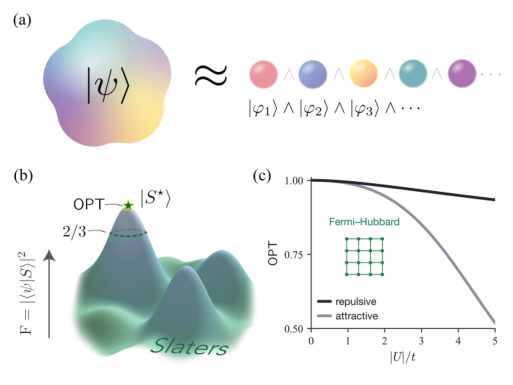
<figcaption class="paper-figure-caption"><b>Fig 1.</b> FIG. 1. Learning the closest Slater determinant. (a) We provide a deterministic protocol to learn the closest Slater de- terminant to an arbitrary fermionic state |ψ⟩. This allows the extraction of useful information about |ψ⟩, such as its natural single-particle orbital basis. (b) Maximizing fidelity F over all Slater determinants is generally a non-convex optimization problem. The optimization landscape exhibits a transition at F = 2/3 above which there are no spurious stationary points. (c) The closest-Slater fidelity OPT of the 4×4 Fermi–Hubbard ground state versus interaction |U|/t, for repulsive and attrac- tive coupling.</figcaption>
</figure>
<figure class="paper-figure-card">
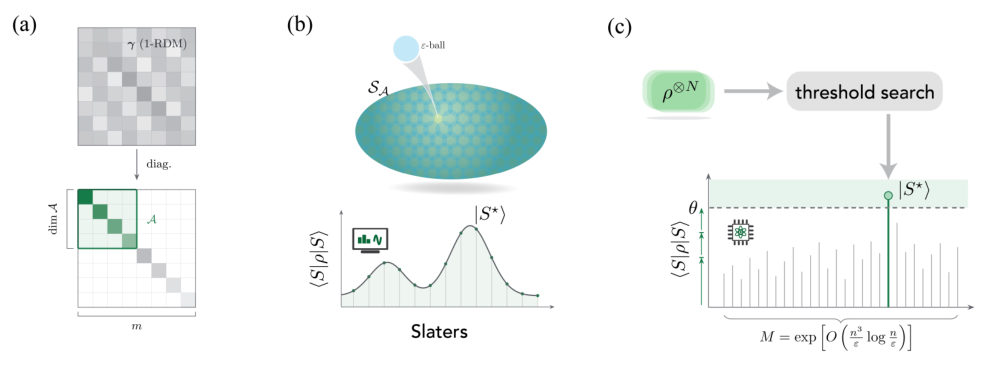
<figcaption class="paper-figure-caption"><b>Fig 2.</b> FIG. 2. Overview of algorithms. (a) The m × m 1-RDM γ is diagonalized into natural orbitals, and an active space A of large occupation (dimension dim A = O(n2/ε)) is retained. (b) An ε-covering net over the manifold SA of Slater determinants built from A is followed by explicit search in the classical case (Theorem 1). The net has size M = exp[O( n3</figcaption>
</figure>
<figure class="paper-figure-card">
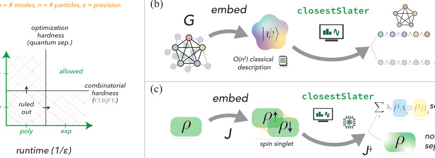
<figcaption class="paper-figure-caption"><b>Fig 3.</b> FIG. 3. Overview of computational hardness. (a) Learning the closest Slater determinant is possible in time polynomial in m and exponential in poly(n, 1/ε). Substantially improving the dependence on n or 1/ε is ruled out by standard computational complexity conjectures. (b) To prove hardness for the n axis, we embed a graph instance G of the n-Multicolored Clique problem into a classical description of a fermionic state, which could be efficiently solved by an efficient closest Slater algorithm. (c) To prove hardness along the 1/ε axis, a bipartite state ρ is embedded by J into the opposite-spin sector of a fermionic state in such a way that a classical or quantum algorithm for the closest...</figcaption>
</figure>
<figure class="paper-figure-card">
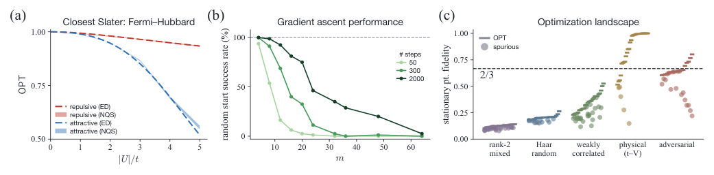
<figcaption class="paper-figure-caption"><b>Fig 4.</b> FIG. 4. Closest Slater implementation and optimization landscape. (a) Fidelity OPT = max|S⟩|⟨S|ψ⟩|2 of the 4 × 4 Fermi–Hubbard ground state (cylinder, n↑= n↓= 2) to the closest Slater versus |U|/t, for both repulsive and attractive interactions. Dashed lines are exact diagonalization (ED) and shaded bands are from trained neural quantum states (NQS), with width the Monte Carlo sampling standard deviation. (b) Fraction of randomly initialized optimizations, for a simple gradient ascent optimizer, that reach the global OPT, versus system size m = 2LxLy (n↑= n↓= 2, U/t = 2). At any fixed # steps, as m increases gradient ascent stalls and the success rate collapses, whereas our algorithm is...</figcaption>
</figure>
<figure class="paper-figure-card">
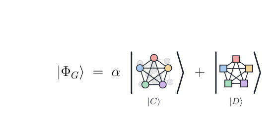
<figcaption class="paper-figure-caption"><b>Fig 5.</b> FIG. 6. Encoding a clique into a superposition of Slaters. The augmented graph G is encoded as the unnor- malized state |ΦG⟩= α P</figcaption>
</figure>
</div>

<p><strong>Summary.</strong> This paper develops provable classical and quantum algorithms to find the best approximation of a general fermionic state $
ho$ using only a Slater determinant. By analyzing the optimization landscape, they identify a critical fidelity threshold at $2/3$. The results offer concrete computational tools for accurately characterizing correlated many-body systems beyond simple mean-field theory.</p>
<p><strong>Why it may be interesting.</strong> The rigorous algorithmic tools provided for approximating complex quantum states (like those from neural networks) are highly relevant for developing robust simulation techniques in AMO physics, especially when dealing with correlated electron systems where mean-field approximations fail.</p>
<details>
<summary>Detailed structure</summary>
<p><strong>Main problem.</strong> The core problem is finding the Slater determinant that maximizes fidelity with a given, potentially complex, fermionic many-body state $
ho$. This is motivated by improving upon mean-field approximations like Hartree-Fock.</p>
<p><strong>Main result.</strong> The authors provide provable classical and quantum algorithms to find this closest Slater determinant within specified error bounds. They also establish that $F=2/3$ marks a critical transition point in the optimization landscape.</p>
<p><strong>Method.</strong> The approach combines estimating the 1-RDM, restricting the search space to an 'active space' using natural orbitals, and then employing $\epsilon$-covering net techniques for exhaustive search over the restricted manifold of Slater determinants.</p>
<p><strong>Model / system.</strong> The work is applied to fermionic many-body systems, specifically mentioning the Fermi-Hubbard model on lattices and the spinless t-V chain. The state $
ho$ can originate from neural quantum states or other simulation methods.</p>
<p><strong>Key observables.</strong> Fidelity $F = \langle S|
ho|S
angle$, the 1-RDM ($\gamma_{ij}$), and the optimal fidelity $  ext{OPT}$.</p>
<p><strong>Important parameters / regimes.</strong> Error tolerance $\epsilon$, number of fermions $n$, single-particle modes $m$, and the critical threshold value of $2/3$.</p>
<p><strong>Assumptions / limitations.</strong> The classical algorithm relies on restricting the search to an active space derived from the 1-RDM, which is assumed sufficient. The complexity proofs rely on standard complexity conjectures.</p>
<p><strong>Figures summary.</strong> Figures illustrate the algorithmic protocol (including RDM estimation and covering nets), show the non-convexity of the optimization landscape with a transition at $F=2/3$, and present results for the Fermi-Hubbard model.</p>
<p><strong>Paper structure.</strong> The paper first defines the problem, then details the classical algorithm using 1-RDM estimation and active space reduction. It proves complexity bounds, analyzes the optimization landscape's non-convexity around $F=2/3$, and concludes with applications to models like Fermi-Hubbard.</p>
</details>
<details>
<summary>Abstract</summary>
<p>Learning compact, interpretable descriptions of quantum many-body states is an important task in quantum science. We study the task of learning the Slater determinant with maximum fidelity to an arbitrary fermionic many-body state, with motivation from both Hartree-Fock methods and agnostic tomography. Given an $n$-fermion wavefunction built from $m$ fermionic modes, we provide classical and quantum algorithms returning a Slater determinant with fidelity within $\varepsilon$ of maximal in time $m^{\text{poly}(n,1/\varepsilon)}$. We prove matching hardness lower bounds, assuming standard complexity conjectures, along some parameter axes. Given access to quantum copies, we prove this can be accomplished with $\text{poly}(m,n,1/\varepsilon)$ copies of $ρ$. We also show that above a fidelity of $2/3$ any stationary point is the unique global maximum while below $2/3$ the optimization landscape can have spurious stationary points, and hence $2/3$ marks a transition point in the optimization landscape for this problem. We apply the algorithm to the Fermi-Hubbard model, extracting the closest Slater determinant from neural quantum state solutions. Together, our results provide algorithmic tools with provable guarantees in understanding fermionic many-body systems with classical or quantum simulation.</p>
</details>
<p><sub><a href="#top">↑ back to top</a></sub></p>

<p><a id="paper-2607.21359"></a></p>
<h3 id="thermal-pseudo-transitions-in-a-frustrated-spin-pseudospin-sawtooth-chain"><a href="http://arxiv.org/abs/2607.21359v1">Thermal pseudo-transitions in a frustrated spin-pseudospin sawtooth chain</a></h3>
<p><strong>Authors:</strong> Onofre Rojas, Jozef Strečka<br>
<strong>Type:</strong> theory · <strong>Category:</strong> statistical mechanics · <strong>PDF:</strong> <a href="https://arxiv.org/pdf/2607.21359v1">https://arxiv.org/pdf/2607.21359v1</a><br>
<strong>Analysis basis:</strong> full PDF text, analyzed in chunks
<strong>Topic relevance:</strong> <code>analog quantum simulation</code> <strong>3/5</strong> · <code>driven-dissipative phase transition</code> <strong>2/5</strong> · <code>non-equilibrium universality</code> <strong>2/5</strong> · <code>Frenkel-Kontorova</code> <strong>1/5</strong> · <code>exotic spin models in light-matter</code> <strong>1/5</strong> · <code>non-equilibrium dynamics</code> <strong>1/5</strong></p>
<div class="figure-strip-hint">↔ Scroll figures horizontally</div>
<div class="paper-figures-scroll">
<figure class="paper-figure-card">
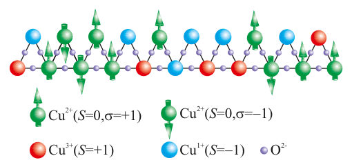
<figcaption class="paper-figure-caption"><b>Fig 1.</b> Figure 1. A schematic illustration of the spin-pseudospin saw- tooth chain and one of its allowed configurations.</figcaption>
</figure>
<figure class="paper-figure-card">
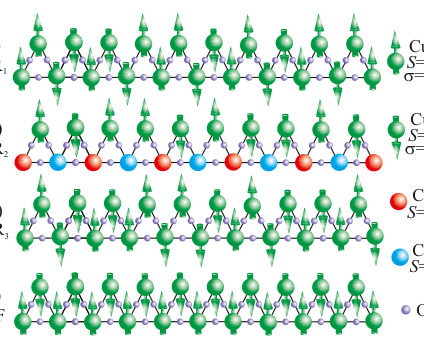
<figcaption class="paper-figure-caption"><b>Fig 2.</b> Figure 2. Four available ground states of the spin-pseudospin sawtooth chain under the condition ∆1 = ∆and V1 = V : (a) FR1 phase with the Néel order of the base spins and a com- plete randomness of the apex spins; (b) FR2 phase with the charge order of the base entities and a complete randomness of the apex spins; (c) FR3 phase with a random three-fold degenerate character of each triangular unit; (d) AF phase with the antiferromagnetic long-range order of the base and apex spins.</figcaption>
</figure>
<figure class="paper-figure-card">
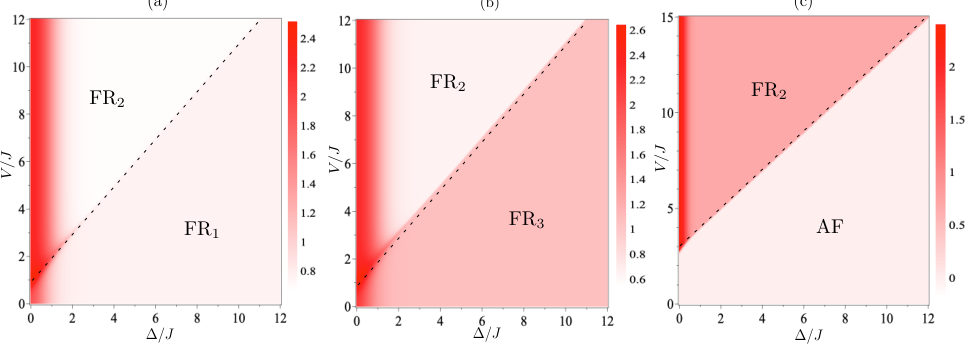
<figcaption class="paper-figure-caption"><b>Fig 3.</b> Figure 3. Ground-state phase diagram in the plane V/J −∆/J assuming ∆1 = ∆and V1 = V for three distinct values of the coupling ratio: (a) J1/J = 0.5, (b) J1/J = 1, (c) J1/J = 2. Background density plot displays the entropy S/(NkB) at a fixed temperature kBT/J = 0.1.</figcaption>
</figure>
<figure class="paper-figure-card">
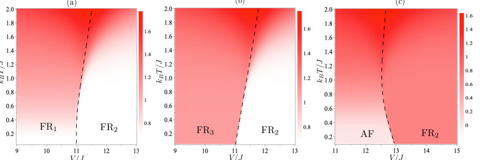
<figcaption class="paper-figure-caption"><b>Fig 4.</b> Figure 4. Density plot of entropy S/(NkB) in the plane V/J −kBT/J for V1 = V , ∆1 = ∆and ∆/J = 10, and three representative values of the coupling ratio: (a) J1/J = 0.5; (b) J1/J = 1.0; (c) J1/J = 2.0. The color maps illustrate the combined effect of temperature and the coupling ratio V/J on the finite-temperature entropy, while the dashed curves show the pseudo-critical temperature Tp(V ) obtained from Eq. (13) and separate the quasi-phases.</figcaption>
</figure>
<figure class="paper-figure-card">
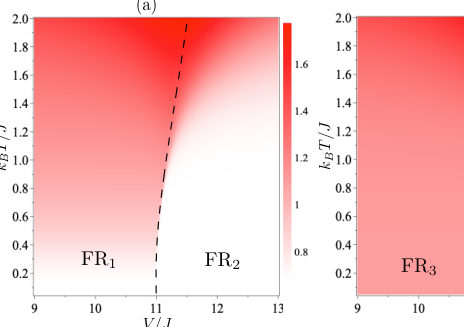
<figcaption class="paper-figure-caption"><b>Fig 5.</b> Fig. 4(b) presents the intermediate coupling case J1/J = 1.0. In this regime, the ridge separating the quasi-phases FR3 and FR2 exhibits a positive slope and follows the condition given by Eq. (13). These phases are characterized at low temperature by entropy plateaus ap- proaching the exact residual values S/(NkB) = ln 3 and S/(NkB) = ln 2, respectively. This regime reflects a bal- ance between spin and charge correlations, analogous to the coexistence of Cu2+ and mixed-valence Cu1+/Cu3+</figcaption>
</figure>
</div>

<p><strong>Summary.</strong> This work provides an exact analysis of a spin-pseudospin model mimicking cuprate chains, focusing on how geometric frustration leads to complex phase behavior. Using the transfer-matrix method, the authors identify pseudo-critical lines where thermodynamic anomalies occur due to competition between charge and spin degrees of freedom. The findings highlight that such geometry promotes short-range coherence and distinct quasi-phase transitions.</p>
<p><strong>Why it may be interesting.</strong> While focused on cuprates, the methodology of analyzing quasi-degeneracy in the transfer matrix spectrum to predict continuous but sharp thermodynamic anomalies (pseudo-transitions) is a powerful technique applicable to other low-dimensional quantum systems exhibiting competing interactions.</p>
<details>
<summary>Detailed structure</summary>
<p><strong>Main problem.</strong> The study investigates thermal pseudo-transitions occurring within a geometrically frustrated spin-pseudospin sawtooth chain, which models one-dimensional cuprates.</p>
<p><strong>Main result.</strong> The system exhibits pronounced pseudo-transition behavior characterized by sharp but continuous peaks in specific heat and avoided-crossing scale at pseudo-critical temperatures. The geometry promotes frustration and short-range coherence.</p>
<p><strong>Method.</strong> The analysis relies on the exact transfer-matrix method (TMM) to derive thermodynamic properties like free energy and entropy.</p>
<p><strong>Model / system.</strong> The model is a spin–pseudospin X sawtooth chain incorporating three valence states of copper ions, capturing competition between magnetic exchange and electrostatic coupling in corner-sharing triangular units.</p>
<p><strong>Key observables.</strong> Free energy, pseudo-critical line condition, specific heat, avoided-crossing scale, local correlation functions ($\langle S_i S_{i+1} 
angle$, $\langle \sigma_i \sigma_{i+1} 
angle$), and residual entropies of ground states.</p>
<p><strong>Important parameters / regimes.</strong> Interaction ratios like $\Delta/J$, $V/J$, and $J_1/J$; temperature ($T$) relative to pseudo-critical temperatures ($T_p$).</p>
<p><strong>Assumptions / limitations.</strong> Periodic boundary conditions are assumed for the chain length, and the transfer-matrix method is used for exact evaluation.</p>
<p><strong>Figures summary.</strong> Figures illustrate the spin-pseudospin sawtooth chain structure, the four possible ground states (AF, FR1, FR2, FR3), and temperature dependence of correlation functions across different parameter regimes.</p>
<p><strong>Paper structure.</strong> The paper first introduces the model and Hamiltonian, then uses TMM to derive eigenvalues and the pseudo-critical condition. It analyzes the resulting ground state phases and finally examines finite-temperature behavior, showing how zero-temperature boundaries evolve into entropy ridges signaling pseudo-transitions.</p>
</details>
<details>
<summary>Abstract</summary>
<p>We present an exact analysis of a spin--pseudospin X sawtooth chain that incorporates three distinct valence states of copper ions and serves as a minimal model for one-dimensional cuprates composed of corner-sharing copper triangles. The model includes magnetic exchange and electrostatic coupling constants both along the base sites and between base and apex sites capturing the competition between spin and charge degrees of freedom. Using the transfer-matrix method, we derive exact expressions for the free energy and obtain an analytical condition defining the pseudo-critical line associated with pronounced thermodynamic anomalies. The ground-state analysis reveals, besides an antiferromagnetic phase, three frustrated phases characterized by distinct residual entropies. At finite temperatures, these zero-temperature phase boundaries evolve into narrow entropy ridges signaling pseudo-transitions between the corresponding quasi-phases. The specific heat and the avoided-crossing scale exhibit sharp but continuous peaks at the pseudo-critical temperature, whereas the physical correlation length may be controlled by a different subleading eigenvalue. Local correlation functions uncover a cooperative rearrangement from charge-dominated to magnetically correlated regimes. Our results demonstrate that the sawtooth geometry promotes frustration and short-range coherence leading to pronounced pseudo-transition behavior.</p>
</details>
<p><sub><a href="#top">↑ back to top</a></sub></p>

<p><a id="paper-2607.20920"></a></p>
<h3 id="measurement-of-the-reduced-dipole-matrix-element-in-bamath489math"><a href="http://arxiv.org/abs/2607.20920v1">Measurement of the reduced dipole matrix element in Ba$^+$</a></h3>
<p><strong>Authors:</strong> N. Jayjong, M. D. K. Lee, K. J. Arnold, M. D. Barrett<br>
<strong>Type:</strong> experiment · <strong>Category:</strong> other · <strong>PDF:</strong> <a href="https://arxiv.org/pdf/2607.20920v1">https://arxiv.org/pdf/2607.20920v1</a><br>
<strong>Analysis basis:</strong> full PDF text, analyzed in chunks
<strong>Topic relevance:</strong> <code>quantum measurements</code> <strong>3/5</strong> · <code>quantum optics experiment</code> <strong>3/5</strong> · <code>QC/QI experiment</code> <strong>1/5</strong> · <code>methods for driven-dissipative</code> <strong>1/5</strong> · <code>non-equilibrium dynamics</code> <strong>1/5</strong></p>
<div class="figure-strip-hint">↔ Scroll figures horizontally</div>
<div class="paper-figures-scroll">
<figure class="paper-figure-card">
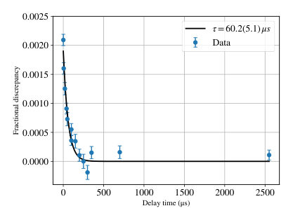
<figcaption class="paper-figure-caption"><b>Fig 1.</b> FIG. 2. Transient response of the Stark AOM, plotted as the fractional discrepancy of the Stark shift at time t relative to the reference shift at tref = 5.0 ms. An exponential decay fit is shown to illustrate the observed trend, rather than to serve as a physical model of the dependence.</figcaption>
</figure>
<figure class="paper-figure-card">
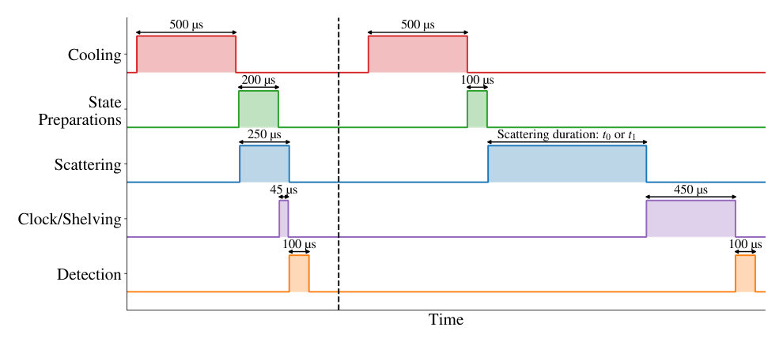
<figcaption class="paper-figure-caption"><b>Fig 2.</b> FIG. 3. Timing sequences for Stark shift measurements (left) and scattering measurements (right). Clock pulse for the scattering measurements represents that total time for the six separate pulses discussed in the text.</figcaption>
</figure>
<figure class="paper-figure-card">
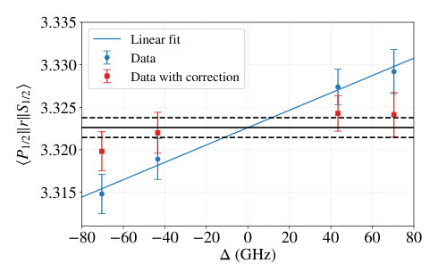
<figcaption class="paper-figure-caption"><b>Fig 3.</b> FIG. 4. Measured matrix element ⟨P1/2∥r∥S1/2⟩as a function of ∆. The raw experimental measurements are shown as blue circles and the data corrected for Stark-shift contributions from other levels are shown as red squares. Error bars on all data points represent ±1σ uncertainties. The solid blue line represents a linear fit to the raw data. The fitted y-intercept, 3.322 7(12) ea0, yields the matrix element value that cancels leading order corrections to the Stark shift given by Eq. 1. The horizontal solid line indicates the overall average value, while the surrounding dashed lines mark the corresponding ±1σ experimental statistical uncertainty.</figcaption>
</figure>
<figure class="paper-figure-card">
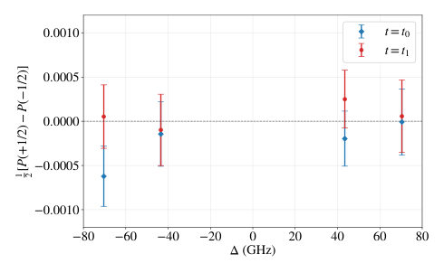
<figcaption class="paper-figure-caption"><b>Fig 4.</b> FIG. 5. Half the measured population differences when scat- tering from either m-state of S1/2 at both t0 and t1 at each of the four detunings used in the measurements. The statistical agreement with zero supports the negligible effects of residual deviations from linear polarization or Zeeman shifts.</figcaption>
</figure>
<figure class="paper-figure-card">
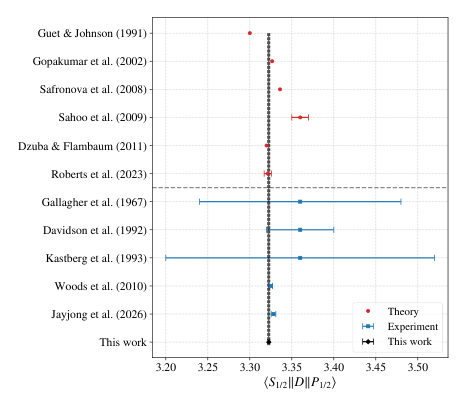
<figcaption class="paper-figure-caption"><b>Fig 5.</b> FIG. 6. Comparison of the reduced electric-dipole matrix element ⟨P1/2∥r∥S1/2⟩measured in this work with previous literature theoretical and experimental results. Theoretical values are taken from Refs. [2–5, 21, 22], while experimental results are from Refs. [14, 16, 18–20]. Uncertainties are shown in parentheses where available. In the figure, theoretical re- sults are shown as circles and experimental results as squares, with horizontal error bars indicating reported uncertainties. The present work is represented by a diamond marker, with the central value shown as a solid vertical line and its 1σ un- certainty indicated by dashed lines.</figcaption>
</figure>
</div>

<p><strong>Summary.</strong> This paper reports a high-precision, experimental determination of the reduced electric-dipole matrix element for $    ext{Ba}^+$ using trapped ions. By meticulously comparing scattering rates and Stark shifts, the authors significantly improve the calculated value for the static differential scalar polarizability. This advancement directly reduces systematic uncertainties in room-temperature optical clock error budgets.</p>
<p><strong>Why it may be interesting.</strong> This work is highly relevant as it pushes the boundaries of precision measurement in atomic physics. The techniques used—combining time-resolved population dynamics with Stark shifts—are central to quantum optics and developing next-generation atomic clocks.</p>
<details>
<summary>Detailed structure</summary>
<p><strong>Main problem.</strong> The primary goal is a high-precision measurement of the reduced electric-dipole matrix element $\langle P_{1/2}\|r\|S_{1/2}
angle$ in singly ionized barium ($    ext{Ba}^+$). This measurement aims to improve the accuracy of calculating the Blackbody Radiation (BBR) shift for optical clocks.</p>
<p><strong>Main result.</strong> The authors determined the reduced dipole matrix element to be $3.3227(12)$ and extracted a static differential scalar polarizability $\Delta\alpha_0(0) = -73.09(12)$ a.u., significantly improving clock error budgets.</p>
<p><strong>Method.</strong> The measurement combines off-resonant scattering rate measurements with dispersive Stark-shift measurements on the $S_{1/2} - P_{1/2}$ transition in $  ext{Ba}^+$. The ratio of these rates is used to extract the matrix element while suppressing systematic errors.</p>
<p><strong>Model / system.</strong> The experiment uses trapped $   ext{Ba}^+$ ions, probing transitions between $S_{1/2}$, $P_{1/2}$, and other levels. The analysis relies on rate equations describing population dynamics under the Rotating Wave Approximation (RWA).</p>
<p><strong>Key observables.</strong> Reduced dipole matrix element $\langle P_{1/2}\|r\|S_{1/2}
angle$, scattering rates ($\gamma_s$), and Stark shifts ($\Delta s$).</p>
<p><strong>Important parameters / regimes.</strong> The measurement is highly sensitive to systematic effects like polarization imbalance, Zeeman shifts, and detuning imbalances; these are quantified and minimized.</p>
<p><strong>Assumptions / limitations.</strong> The analysis assumes the validity of rate equations derived under certain approximations (e.g., first order in small parameters) and carefully accounts for various systematic shifts by comparing measurements at different conditions.</p>
<p><strong>Figures summary.</strong> Figures illustrate the level structure, timing sequences for measurements, and plots showing the measured matrix element versus detuning, confirming consistency across measurement settings.</p>
<p><strong>Paper structure.</strong> The paper details the experimental setup using $   ext{Ba}^+$ ions, describes the methodology involving interleaved Stark-shift and scattering-rate measurements, presents the data analysis to extract the RME, and concludes by applying this result to improve BBR shift calculations for optical clocks.</p>
</details>
<details>
<summary>Abstract</summary>
<p>We present a high-precision measurement of the reduced electric-dipole matrix element $\langle P_{1/2}\|r\|S_{1/2}\rangle$ in $^{138}\mathrm{Ba}^+$. By comparing off-resonant scattering rates with dispersive Stark-shift measurements, we determine the matrix element to be $3.322\,7(12)$, corresponding to a $P_{1/2}$ excited-state radiative lifetime of $7.866\,3(56)$~ns. Combining our experimental results with a prior model for the differential scalar polarizability $Δα_0(ω)$, we extract the static value $Δα_0(0) = -73.09(12)$a.u. This determination directly improves the evaluation of the blackbody radiation (BBR) shift, minimizing a prominent systematic limitation in room-temperature $\mathrm{Ba}^+$ optical clock error budgets. These results provide a stringent benchmark for atomic-structure calculations and advance high-precision applications in quantum metrology and tests of fundamental physics.</p>
</details>
<p><sub><a href="#top">↑ back to top</a></sub></p>

<p><a id="paper-2607.21215"></a></p>
<h3 id="quantum-circuit-fragments-and-link-products-in-continuous-variables"><a href="http://arxiv.org/abs/2607.21215v1">Quantum Circuit Fragments and Link Products in Continuous Variables</a></h3>
<p><strong>Authors:</strong> Amalina Lai, Graeme D. Berk, Minjeong Song, Mile Gu<br>
<strong>Type:</strong> theory · <strong>Category:</strong> quantum information and computing · <strong>PDF:</strong> <a href="https://arxiv.org/pdf/2607.21215v1">https://arxiv.org/pdf/2607.21215v1</a><br>
<strong>Analysis basis:</strong> full PDF text, analyzed in chunks
<strong>Topic relevance:</strong> <code>methods for driven-dissipative</code> <strong>3/5</strong> · <code>Keldysh / 2PI / non-Gaussian methods</code> <strong>1/5</strong> · <code>analog quantum simulation</code> <strong>1/5</strong> · <code>correlated / nonlocal dissipation</code> <strong>1/5</strong> · <code>driven-dissipative phase transition</code> <strong>1/5</strong> · <code>entanglement &amp; information structure</code> <strong>1/5</strong> · <code>non-equilibrium dynamics</code> <strong>1/5</strong></p>
<div class="figure-strip-hint">↔ Scroll figures horizontally</div>
<div class="paper-figures-scroll">
<figure class="paper-figure-card">
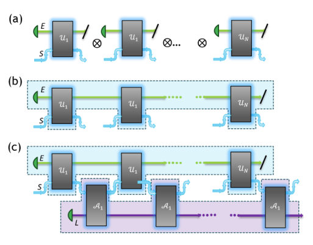
<figcaption class="paper-figure-caption"><b>Fig 1.</b> Figure 1. Quantum circuit fragments and link prod- ucts. In traditional settings, we often treat a quantum pro- tocol as the application of some quantum process to a system S - mathematically equivalent to a unitary interaction with an environment E that is subsequently traced out (a). In many settings, however, the environment is non-Markovian, such that outputs at future times can depend on past inputs. Such objects are naturally treated as multi-time quantum circuit fragments with open ports (b). The quantum comb formal- ism provides a systematic means to describe such fragments and to connect them through the link product, as illustrated by the blue and violet fragments in (c). This...</figcaption>
</figure>
<figure class="paper-figure-card">
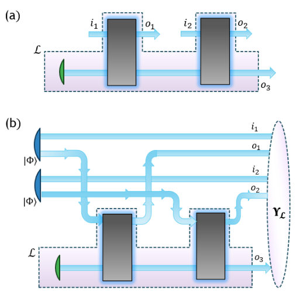
<figcaption class="paper-figure-caption"><b>Fig 2.</b> Figure 2. Choi States of Circuit Fragments. Consider a circuit fragment L with N = 2 input qudit wires and M = 3 output qudit wires (a). Its black-box properties can then be fully captured by the corresponding N + M = 5 qudit Choi state ΥL prepared by the circuit in (b). Here, each blue disk segment denotes a maximally entangled qudit pair |Φ⟩, while the green disk segment denotes the initial state of an ancilla qudit that can interact with qudits input at i1 and i2.</figcaption>
</figure>
<figure class="paper-figure-card">
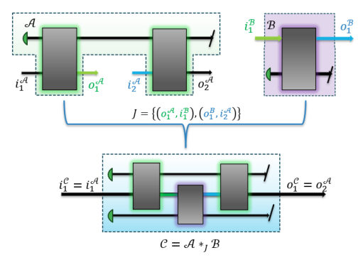
<figcaption class="paper-figure-caption"><b>Fig 3.</b> Figure 3. J-stitching circuit fragments. Two circuit frag- ments can be composed together to form larger circuit frag- ments via a J-stitching, where J specifies exactly how the inputs and outputs on one fragment connect to the other. In the example above, circuit fragments A and B are composed to form C = A ⋆J B, where each pair of modes in J share the same color. Formally, we can write J = {(oA 1 , iB 1 ), (oB 1 , iA 2 )}, where each element denotes a pair of input/output modes to be connected. Note that this specific example is bidirectional: J includes connections from A to B and from B to A.</figcaption>
</figure>
<figure class="paper-figure-card">
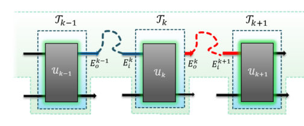
<figcaption class="paper-figure-caption"><b>Fig 4.</b> Figure 4. Stitching a Non-Markovian Process. We can construct the Choi representation of a Non-Markovian process by stitching a sequence of circuit fragments Tk in series, such that each two consecutive circuit fragments Tk and Tk+1 are stitched together by the stitching (Ek o , Ek+1 i ).</figcaption>
</figure>
<figure class="paper-figure-card">
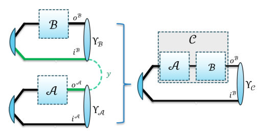
<figcaption class="paper-figure-caption"><b>Fig 5.</b> Figure 5. Linking two quantum channels. ΥA(r) and ΥB(r′) are the Choi states of two single-input, single-output circuit fragments, i.e., quantum channels. We can find the Choi states of their concatenation ΥC via the mode-stitching y = (oA, iB).</figcaption>
</figure>
</div>

<p><strong>Summary.</strong> This paper extends the concept of 'link products'—a method for composing quantum processes—from finite-dimensional systems to continuous variables. It introduces a systematic framework using covariance matrices that allows researchers to model complex open quantum interactions like non-Markovian noise or adaptive measurements in CV platforms. This provides essential tools for designing and analyzing advanced quantum protocols.</p>
<p><strong>Why it may be interesting.</strong> This work provides a powerful mathematical toolset (the CV link product) that generalizes established concepts from discrete quantum information theory into the continuous variable domain, which is crucial for modern photonic quantum optics experiments.</p>
<details>
<summary>Detailed structure</summary>
<p><strong>Main problem.</strong> The paper develops a systematic framework, analogous to link products, to analyze how quantum circuit fragments interact and compose specifically for continuous-variable (CV) systems.</p>
<p><strong>Main result.</strong> This formalism extends existing tools to CVs, allowing the characterization of non-Markovian processes and adaptive interactions by efficiently calculating resulting covariance matrices in the Gaussian regime.</p>
<p><strong>Method.</strong> The core method involves defining a Continuous-Variable Link Product ($\star_J$) applied to Choi states representing circuit fragments. In the Gaussian limit, this composition is calculated using iterative contractions on covariance matrices rather than full density operators.</p>
<p><strong>Model / system.</strong> The system models quantum information tasks where the process is viewed as an 'open circuit fragment' (e.g., unknown noise source or subroutine). The mathematical tools are built around CV states characterized by quadrature expectation values and their associated covariance matrices ($\Gamma$).</p>
<p><strong>Key observables.</strong> Covariance matrix ($\Gamma$), Choi state representation ($\Upsilon_C$), and the resulting total covariance matrix ($\Gamma_{	ext{tot}}$) after stitching.</p>
<p><strong>Important parameters / regimes.</strong> Squeezing parameter ($r$), quadrature means ($\vec{d}$), and the limiting process variables ($s, r', s' 	o \infty$).</p>
<p><strong>Assumptions / limitations.</strong> The formalism relies on approximations in the limits of large separation distances ($r' 	o \infty$ and $r'' 	o \infty$) to simplify the complex link product calculations.</p>
<p><strong>Figures summary.</strong> Figure 1 illustrates the concept of circuit fragments vs. closed protocols; Figure 2 shows the Choi state representation for a fragment in finite dimensions, while later figures detail the matrix manipulations for stitching.</p>
<p><strong>Paper structure.</strong> The paper first establishes the need for CV link products by drawing parallels to finite-dimensional systems. It then introduces the formalism using Gaussian states and covariance matrices, demonstrating its application to non-Markovianity and adaptive sensing through explicit calculation examples.</p>
</details>
<details>
<summary>Abstract</summary>
<p>Quantum circuits are often drawn as complete processes, with fixed inputs and outputs. In many quantum-information tasks, however, the natural object is only a fragment of such a circuit: an unknown source of non-Markovian noise to be probed, a subroutine to be inserted into a larger algorithm, or an agent implementing an adaptive strategy. In finite dimensions, the link product provides a systematic means to analyze how such circuit fragments interact and compose. Here, we develop the corresponding framework for continuous-variable systems. We introduce continuous-variable circuit fragments and associated link products that stitch such fragments together into larger processes. We show that the formalism simplifies substantially in the Gaussian regime, where link products can be evaluated efficiently using covariance-matrix representations. We use the formalism to construct non-Markovian processes and adaptive agent-environment interactions from modular components. This extends the quantum-comb toolkit to continuous variables, providing systematic methods for adaptive sensing, non-Markovian noise mitigation, and higher-order quantum circuit design.</p>
</details>
<p><sub><a href="#top">↑ back to top</a></sub></p>

<p><a id="paper-2607.21216"></a></p>
<h3 id="argon-a-gnn-empowered-compilation-framework-for-scalable-neutral-atom-computing"><a href="http://arxiv.org/abs/2607.21216v1">ARGON: A GNN-Empowered Compilation Framework for Scalable Neutral Atom Computing</a></h3>
<p><strong>Authors:</strong> Wenjie Sun, Xiaoyu Li, Zhigang Wang, Lianhui Yu, Geng Chen, Guowu Yang<br>
<strong>Type:</strong> theory · <strong>Category:</strong> quantum information and computing · <strong>PDF:</strong> <a href="https://arxiv.org/pdf/2607.21216v1">https://arxiv.org/pdf/2607.21216v1</a><br>
<strong>Analysis basis:</strong> full PDF text, analyzed in chunks
<strong>Topic relevance:</strong> <code>Rydberg arrays</code> <strong>3/5</strong> · <code>QC/QI experiment</code> <strong>2/5</strong> · <code>analog quantum simulation</code> <strong>1/5</strong> · <code>methods for driven-dissipative</code> <strong>1/5</strong> · <code>non-equilibrium dynamics</code> <strong>1/5</strong></p>
<div class="figure-strip-hint">↔ Scroll figures horizontally</div>
<div class="paper-figures-scroll">
<figure class="paper-figure-card">
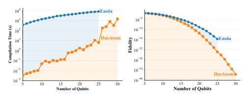
<figcaption class="paper-figure-caption"><b>Fig 1.</b> Figure 1: The scalability bottleneck of SOTA NA compilers.</figcaption>
</figure>
<figure class="paper-figure-card">

<figcaption class="paper-figure-caption"><b>Fig 2.</b> Figure 2: Spatiotemporal scheduling constraints in reconfigurable neutral atom arrays. Blue regions represent conflict regions formed during two-qubit gate execution; for parallel execution, these regions must not overlap. Green dashed lines indicate AOD columns 𝑐𝑖and rows 𝑟𝑗, and green areas represent regions swept by AOD movement. (a) Illustration of conflict regions for two-qubit gates and parallel execution constraints. (b)(c) Sequential execution of atom transfer and AOD movement across two steps, where two-qubit gates 𝑔𝑖and 𝑔𝑖+1 cannot be executed simultaneously due to AOD movement constraints.</figcaption>
</figure>
<figure class="paper-figure-card">

<figcaption class="paper-figure-caption"><b>Fig 3.</b> Figure 3: Overview of the ARGON Framework. The compilation pipeline isolates spatiotemporal evaluations into three sequential phases: an offline spatial layout library construction, a GNN-guided predictive temporal placement, and a lightweight heuristic backend router. This decoupling effectively translates hardware-agnostic quantum circuits into collision-free physical transport trajectories.</figcaption>
</figure>
<figure class="paper-figure-card">

<figcaption class="paper-figure-caption"><b>Fig 4.</b> Figure 4: Visualization of spatial connectivity and solver opti- mized parallelism on a neutral atom grid. a Valid connectivity scope: Illustration of all physically feasible two qubit gate pairings for a central atom, constrained by an interaction radius 𝑅int = 2 normalized to trap spacing. b Maximal parallel layout: A solver generated layout on a 12 × 12 grid that maxi- mizes the number of simultaneous gates Gselect. The solution achieves dense spatial packing while enforcing disjoint re- striction zones to prevent parallel execution violations.</figcaption>
</figure>
<figure class="paper-figure-card">

<figcaption class="paper-figure-caption"><b>Fig 5.</b> Figure 5: The architectural structure of the GNN-guided pre- dictive placement engine.</figcaption>
</figure>
</div>

<p><strong>Summary.</strong> This paper introduces ARGON, a novel compilation framework designed to overcome the exponential complexity barrier in programming quantum circuits for neutral atom processors. By decoupling static spatial constraints from dynamic temporal scheduling using a GNN predictor, ARGON achieves massive speedups and significantly higher execution fidelity compared to current state-of-the-art methods.</p>
<p><strong>Why it may be interesting.</strong> It provides a critical software tool that directly addresses the scaling limitations of physical quantum hardware platforms like neutral atoms by abstracting away intractable combinatorial search problems into manageable, predictive inference tasks.</p>
<details>
<summary>Detailed structure</summary>
<p><strong>Main problem.</strong> Compiling quantum circuits for neutral atom processors is bottlenecked by jointly optimizing dynamic atom transport scheduling and static spatial interference constraints, leading to an exponentially expanding search space.</p>
<p><strong>Main result.</strong> ARGON achieves compilation in under 10 seconds, providing up to a $>10^4	imes$ speedup over state-of-the-art baselines while improving execution fidelity by up to $10^2	imes$.</p>
<p><strong>Method.</strong> The framework uses a spatiotemporal decoupling paradigm: precomputing static layouts offline and employing a Graph Neural Network (GNN) to predict viable temporal routes, which are then synthesized via heuristic routing.</p>
<p><strong>Model / system.</strong> The system is based on Neutral Atom (NA) quantum processors utilizing programmable optical tweezers for high qubit uniformity and flexible connectivity. Operations involve dynamic atom transport and entangling gates driven by the Rydberg blockade mechanism.</p>
<p><strong>Key observables.</strong> Compilation Time, Physical Execution Fidelity, Average Speedup Factor.</p>
<p><strong>Important parameters / regimes.</strong> Qubit Number ($N$), Interaction Radius ($R_{int}$), Decoherence rates.</p>
<p><strong>Assumptions / limitations.</strong> The core assumption addressed is that the joint spatiotemporal coupling can be broken by separating static geometric conflict resolution from dynamic temporal routing.</p>
<p><strong>Figures summary.</strong> Figure 1 compares compilation time and fidelity degradation of existing compilers across varying qubit numbers; Figure 2 illustrates the complex spatiotemporal scheduling constraints involving gate conflict regions and AOD movement rules.</p>
<p><strong>Paper structure.</strong> The paper introduces ARGON by identifying the joint optimization bottleneck, proposing a three-stage solution (offline layout library $
ightarrow$ GNN prediction $
ightarrow$ heuristic routing), and validating its superior scalability and fidelity improvement over existing methods.</p>
</details>
<details>
<summary>Abstract</summary>
<p>Neutral atom quantum systems offer a promising pathway to large-scale quantum computing due to high qubit uniformity and flexible connectivity. To exploit this architecture, compilers must coordinate dynamic atom transport alongside highly parallel entangling gates. As circuits scale, the interplay between these operations becomes a system bottleneck, introducing denser logical interactions and longer temporal dependencies. Compilers must simultaneously satisfy rigid spatial constraints and complex movement schedules. Existing joint spatiotemporal compilation methods face an exponentially expanding search space, incurring substantial overheads or compromising fidelity as circuit size grows.   In this work, we propose ARGON, a scalable compilation framework that introduces a spatiotemporal decoupling paradigm for neutral atom processors. Our key novelty is offloading static geometric conflict resolution to an offline phase, precomputing a library of hardware-certified, high-parallelism spatial layouts. To guide temporal routing, we deploy a Graph Neural Network (GNN) predictor to evaluate candidate layouts against deep temporal horizons, proactively evading downstream kinematic bottlenecks. Finally, a heuristic router translates the selected sequence into collision-free physical transport.   Evaluations show ARGON completes compilation in under 10 seconds, delivering up to a &gt;10^4x and 600x average speedup over state-of-the-art baselines. ARGON also minimizes routing decoherence and reduces Rydberg stages, improving execution fidelity by up to 10^2x on dense circuits.</p>
</details>
<p><sub><a href="#top">↑ back to top</a></sub></p>

<p><a id="paper-2607.20663"></a></p>
<h3 id="doping-induced-ferromagnetic-order-and-its-unusual-evolution-to-helical-antiferromagnetic-order-in-srnimath521mathcomath522mathmath523mathpmath524math"><a href="http://arxiv.org/abs/2607.20663v1">Doping-induced Ferromagnetic order and its unusual evolution to Helical Antiferromagnetic Order in Sr(Ni$_{1-x}$Co$_x$)$_2$P$_2$</a></h3>
<p><strong>Authors:</strong> A. Sapkota, J. Schmidt, J. M. Wilde, L. -L. Wang, W. Tian, M. Matsuda, A. Kreyssig, S. L. Bud'ko, P. C. Canfield<br>
<strong>Type:</strong> both · <strong>Category:</strong> strongly correlated electrons · <strong>PDF:</strong> <a href="https://arxiv.org/pdf/2607.20663v1">https://arxiv.org/pdf/2607.20663v1</a><br>
<strong>Analysis basis:</strong> full PDF text, analyzed in chunks
<strong>Topic relevance:</strong> <code>exotic spin models in light-matter</code> <strong>3/5</strong> · <code>spintronics-quantum-optics interface</code> <strong>3/5</strong> · <code>analog quantum simulation</code> <strong>2/5</strong></p>
<div class="figure-strip-hint">↔ Scroll figures horizontally</div>
<div class="paper-figures-scroll">
<figure class="paper-figure-card">

<figcaption class="paper-figure-caption"><b>Fig 1.</b> FIG. 1. Magnetic phase diagram and magnetic structures corresponding to Sr(Ni1−xCox)2P2. (a) The magnetic phase diagram of Sr(Ni1−xCox)2P2 with N´eel temperatures (TN) in blue for the antiferromagnetic phase (AFM), and Curie temperatures (TC) in magenta for the ferromagnetic phase (FM). Critical temperatures determined from bulk magnetic susceptibility in Ref. [8] are shown as filled markers. Neutron diffraction samples are shown with red arrows and quantum phase transition (QPT) near SrCo2P2 end member with green arrow. (b) Helical antiferromagnetic structure with the propagation vector, (0 0 τ), for τ ∼0.6 r.l.u., which shows ferromagnetically aligned layers with the ordered magnetic...</figcaption>
</figure>
<figure class="paper-figure-card">

<figcaption class="paper-figure-caption"><b>Fig 2.</b> FIG. 2. Single-crystal neutron diffraction data in the AFM region for x = 0.88 and 0.94 of Sr(Ni1−xCox)2P2. (a), (d) (0 0 L) scans showing additional Bragg peaks at low temperatures for x = 0.88 and 0.94, respectively. (b), (e) (0 0 L) scans of the incommensurate magnetic Bragg peak (0 0 2)−τ at several temperatures for x = 0.88 and 0.94, respectively. Solid lines are fits using Gaussian lineshapes. (c), (f) Intensity of the (0 0 2) −τ Bragg peak (proportional to the ordered moment squared) vs temperature for x = 0.88 and 0.94, respectively. Solid blue lines are from a power-law fit.</figcaption>
</figure>
<figure class="paper-figure-card">

<figcaption class="paper-figure-caption"><b>Fig 3.</b> FIG. 4. Evolution of the incommensurate antiferromagnetic propagation vector, τ = (0 0 τ), at the magnetic Bragg peak (0 0 2) −τ with x. (a) (0 0 L) scans showing incommensurate magnetic Bragg peaks for both x = 0.88 and 0.94 single crystals. The decrease in the center of the peak in L corresponds with an increase in τ. (b) Plot showing the dependence of τ on the Co concentration for Sr(Ni1−xCox)2P2 is consistent with results for Sr(Ni1−xCox)2As2 [18, 30, 31].</figcaption>
</figure>
<figure class="paper-figure-card">

<figcaption class="paper-figure-caption"><b>Fig 4.</b> FIG. 3. Comparison between the measured integrated intensities (IIobs) and calculated integrated intensities (IIcalc) of the incommensurate magnetic reflections for x = 0.88 (a) and x = 0.94 (b). The calculated intensities were obtained using FULLPROF based on the helical magnetic structure shown in Fig. 1(b). The dashed line represents the best linear fit, whose slope corresponds to the squared ordered magnetic moment, yielding an ordered moment of µ = 0.18(3) and 0.10(3) µB, respectively.</figcaption>
</figure>
<figure class="paper-figure-card">

<figcaption class="paper-figure-caption"><b>Fig 5.</b> FIG. 5. Neutron diffraction data within the FM phase for a single crystal of Sr(Ni1−xCox)2P2 for x = 0.97. (a) (0 0 L) scans over a wide range. (b) (0 0 L) scans of the (0 0 2) Bragg peak showing an enhancement of intensity at low temperatures (c) Temperature dependence of the integrated intensity of the (0 0 2) Bragg peak. The critical temperature was obtained from a power law fit of the data below 8.5 K where β = 0.38(3).</figcaption>
</figure>
</div>

<p><strong>Summary.</strong> This paper investigates the complex interplay between structural collapse and magnetism in $   ext{Sr}(    ext{Ni}_{1-x}   ext{Co}_x)_2    ext{P}_2$. Using neutron diffraction, the authors map out a magnetic phase diagram showing a transition from helical antiferromagnetism to ferromagnetism upon Co doping. The results highlight that the magnetic evolution requires theoretical frameworks beyond standard itinerant or local-moment models.</p>
<p><strong>Why it may be interesting.</strong> This work provides detailed experimental evidence on competing magnetic ground states in a strongly correlated material system, pushing beyond simple Heisenberg model predictions for itinerant magnetism.</p>
<details>
<summary>Detailed structure</summary>
<p><strong>Main problem.</strong> The study aims to elucidate the detailed nature of magnetic ground states (Ferromagnetic vs. Helical Antiferromagnetic) and their evolution in doped $    ext{Sr}(    ext{Ni}_{1-x}   ext{Co}_x)_2    ext{P}_2$.</p>
<p><strong>Main result.</strong> Neutron diffraction confirms that while doping $x=0.88$ and $x=0.94$ yield incommensurate helical AFM order, the composition $x=0.97$ exhibits a clear ferromagnetic ground state.</p>
<p><strong>Method.</strong> The research combines single-crystal neutron diffraction measurements with Density Functional Theory (DFT) calculations to probe magnetic structures.</p>
<p><strong>Model / system.</strong> The physical system is the $    ext{A}( ext{TM})<em 1-x>2  ext{X}_2$ compound series, specifically $   ext{Sr}(    ext{Ni}</em>_2$, which features a unique 'one-third collapsed' structural phase. The magnetic behavior is analyzed across doping levels $x$.}   ext{Co}_x)_2    ext{P</p>
<p><strong>Key observables.</strong> Magnetic ordering type (FM vs. AFM), incommensurate propagation vector $   au$, Néel temperatures ($T_N$), and Curie temperatures ($T_C$).</p>
<p><strong>Important parameters / regimes.</strong> Doping concentration $x$ (e.g., 0.88, 0.94, 0.97); temperature range; structural parameters like the $c/a$ ratio.</p>
<p><strong>Assumptions / limitations.</strong> The evolution of magnetic states is subtle and does not appear to be fully captured by conventional itinerant or local-moment Heisenberg models.</p>
<p><strong>Figures summary.</strong> Figures show the magnetic phase diagram, neutron diffraction data confirming incommensurate peaks for intermediate $x$, and comparisons between measured and calculated intensities using helical structure models.</p>
<p><strong>Paper structure.</strong> The paper establishes the context of the unusual bonding motif, presents experimental results from neutron diffraction showing doping-dependent magnetic transitions (helical $
ightarrow$ ferromagnetic), and concludes by discussing how these findings challenge existing theoretical models.</p>
</details>
<details>
<summary>Abstract</summary>
<p>SrNi$_2$P$_2$ represents a unique case of a collapsed structural phase (one-third collapsed, where one out of every three P-P pairs forms a bond) in the A(TM)$_2$X$_2$ family of compounds (A = alkali metal, alkaline-earth metal, or rare earth; TM = transition metal; X = pnictogen). Furthermore, Co doping studies aimed at understanding the interrelationship between this unusual bonding motif and the resulting physical properties produced a magnetically rich phase diagram, specifically on the Co-rich side of the phase diagram. However, important questions remained regarding the detailed nature of the magnetic ground states. To address these issues, we performed single-crystal neutron diffraction measurements on Sr(Ni$_{1-x}$Co$_x$)$_2$P$_2$ with compositions $x = 0.88$, 0.94, and 0.97. For $x = 0.88$ and 0.94, the measurements reveal incommensurate helical magnetic order with a doping-dependent propagation vector $(0,0,τ)$, similar to that observed in Sr(Ni$_{1-x}$Co$_x$)$_2$As$_2$. In contrast, the $x = 0.97$ composition shows clear signatures of a ferromagnetically ordered ground state, resolving the earlier ambiguity regarding the nature of the low-temperature phase. Furthermore, our results highlight the subtle balance between these competing ground states, whose evolution does not appear to be fully captured by the conventional frameworks of either itinerant or local-moment Heisenberg models typically applied to related 122 systems.</p>
</details>
<p><sub><a href="#top">↑ back to top</a></sub></p>

<p><a id="paper-2607.20840"></a></p>
<h3 id="discrete-modulated-continuous-variable-quantum-key-distribution-with-uncertainty-principle"><a href="http://arxiv.org/abs/2607.20840v1">Discrete-modulated continuous-variable quantum key distribution with uncertainty principle</a></h3>
<p><strong>Authors:</strong> Jiale Mi, Yiming Bian, Song Yu, Zhengyu Li, Yichen Zhang, Hong Guo<br>
<strong>Type:</strong> both · <strong>Category:</strong> quantum information and computing · <strong>PDF:</strong> <a href="https://arxiv.org/pdf/2607.20840v1">https://arxiv.org/pdf/2607.20840v1</a><br>
<strong>Analysis basis:</strong> full PDF text, analyzed in chunks
<strong>Topic relevance:</strong> <code>quantum optics experiment</code> <strong>3/5</strong> · <code>QC/QI experiment</code> <strong>2/5</strong> · <code>entanglement &amp; information structure</code> <strong>1/5</strong> · <code>interference shaping light</code> <strong>1/5</strong></p>
<div class="figure-strip-hint">↔ Scroll figures horizontally</div>
<div class="paper-figures-scroll">
<figure class="paper-figure-card">

<figcaption class="paper-figure-caption"><b>Fig 1.</b> FIG. 1. (a) The prepare-and-measure scheme of the proposed DM CV-QKD protocol. A quantum random number genera- tor (QRNG) produces n-bit symbols, each of which is mapped to one of 2n coherent states in the discrete modulation con- stellation. Inset plots show the probability distributions of three representative modulation formats: 16-QAM, 64-QAM, and 256-QAM. VOA, variable optical attenuator; Hom, ho- modyne measurement. (b) The entanglement-based scheme for the proposed protocol. POVM, positive-operator valued measure. Het, heterodyne measurement.</figcaption>
</figure>
<figure class="paper-figure-card">

<figcaption class="paper-figure-caption"><b>Fig 2.</b> FIG. 2. (a) Covariance matrix and its symmetric form after symmetrization. The white boxes represents 0. (b) Three steps for covariance matrix symmetrization. S1: Controlled rotation. S2: Local rotation. S3: State mixture.</figcaption>
</figure>
<figure class="paper-figure-card">

<figcaption class="paper-figure-caption"><b>Fig 3.</b> FIG. 3. (a) The variation trend of normalized SNorm BE within the normalized interval FNorm κ under different transmission distances L. (b) The variation trend of normalized SNorm BE within the normalized interval FNorm κ under different ηBS at 100 km. FNorm κ = [−R/¯κ, R/¯κ]. Simulation parameters: excess noise ε = 0.04 SNU, detection efficiency η = 0.6, elec- tronic noise νele = 0.1 SNU. The modulation variance VM = 4 SNU, and ηA = 1 −10−4.</figcaption>
</figure>
<figure class="paper-figure-card">

<figcaption class="paper-figure-caption"><b>Fig 4.</b> FIG. 4. (a) SKR of the DM protocol for different ηA com- pared with the ideal Gaussian protocol, with a fixed mode variance VA = 5 SNU and ηBS = 0.9. (b) SKR based on 3-mode matrix γsym ACB and 2-mode matrix γsym AB with different ηBS. (c) Normalized SKR versus ηBS under different trans- mission distances, where the SKR is normalized to its value at ηBS = 1 −10−5. (d) Tolerable excess noise versus ηBS un- der different distances. Simulation parameters: reconciliation efficiency β = 0.95, excess noise ε = 0.04 SNU, detection effi- ciency η = 0.6, electronic noise νele = 0.1 SNU [33]. VM = 4 and ηA = 1 −10−4 for (b), VM = 4 and ηA = 1 −10−6 for (c) and (d).</figcaption>
</figure>
<figure class="paper-figure-card">

<figcaption class="paper-figure-caption"><b>Fig 5.</b> FIG. 5. (a) Experimental setup of the DM CV-QKD system based on discrete component. AWG, arbitrary waveform generator; IQ mod, in-phase/quadrature modulator; VOA, variable optical attenuator; PC, polarization controller; PBC, polarization beam combiner; PBS, polarization beam splitter; BS, beam splitter; PMOC, polarization-maintaining optical couplers; BHD, balanced homodyne detector; PDRM, polarization diversity receiver module; DSO, digital storage oscilloscope. (b) The integrated silicon photonic receiver chip. PD, photodiode; MMI, multi-mode interferometer. (c) Experimental key rates and numerical simulations. The solid and dashed lines are the numerical simulations of SKRs using...</figcaption>
</figure>
</div>

<p><strong>Summary.</strong> This paper introduces a novel, SDP-free security framework for discrete-modulated Continuous-Variable Quantum Key Distribution. By grounding the analysis in the Heisenberg uncertainty principle and utilizing source-mode expansion, the authors successfully quantify key rates for high-order constellations. The work is validated both theoretically and experimentally on photonic platforms, demonstrating strong noise resilience.</p>
<p><strong>Why it may be interesting.</strong> This work directly addresses practical limitations in quantum communication protocols by providing computationally tractable security bounds for real-world hardware constraints (discrete modulation), which is crucial for realizing scalable quantum networks.</p>
<details>
<summary>Detailed structure</summary>
<p><strong>Main problem.</strong> The primary challenge is developing a secure key rate analysis framework for discrete-modulated Continuous-Variable Quantum Key Distribution (CV-QKD) that avoids computationally prohibitive Semidefinite Programming (SDP).</p>
<p><strong>Main result.</strong> The authors developed a security framework based on the Heisenberg uncertainty principle, enabling high-order constellation analysis and showing performance approaching ideal Gaussian limits with 256 points.</p>
<p><strong>Method.</strong> The method involves developing an entanglement-based security bound by introducing ancillary modes and employing symmetrization techniques to simplify the covariance matrix constraints, thereby obviating SDP.</p>
<p><strong>Model / system.</strong> The system is CV-QKD using discrete modulation, modeled via a multi-mode entangled source ($
ho_{ACB}$) characterized by its covariance matrix. The analysis extends from theoretical bounds to experimental validation on both discrete and integrated photonic platforms.</p>
<p><strong>Key observables.</strong> Secret Key Rate (SKR), Covariance matrices ($\gamma_{ACB}$), Normalized SKR ($    ext{SNorm}_{BE}$).</p>
<p><strong>Important parameters / regimes.</strong> Constellation size (up to 256 points), excess noise ($  ext{SNU}$), channel transmittance ($T$), and the degree of modulation order.</p>
<p><strong>Assumptions / limitations.</strong> The security analysis relies on exploiting the convexity of the Secret Key Rate (SKR) function, and experimental results assume successful implementation of advanced Digital Signal Processing (DSP).</p>
<p><strong>Figures summary.</strong> Figures illustrate the prepare-and-measure vs. entanglement-based schemes, show the three steps of covariance matrix symmetrization, compare SKR for different modulation orders (e.g., 256-QAM), and detail the experimental setup using chip-based photonics.</p>
<p><strong>Paper structure.</strong> The paper progresses from identifying the SDP limitation in CV-QKD security proofs to proposing a Heisenberg uncertainty principle-based framework. This is followed by detailed mathematical derivations involving multi-mode state symmetrization, culminating in both theoretical analysis and experimental validation across various modulation formats.</p>
</details>
<details>
<summary>Abstract</summary>
<p>Continuous-variable quantum key distribution is a compelling framework for scalable quantum networks due to its seamless integration with existing optical communication infrastructure. However, a fundamental gap persists between theoretical protocols requiring ideal Gaussian modulation and the constrained, discrete-modulated signals dictated by practical high-speed hardware. Current security proofs for discrete modulation rely on semidefinite programming, which suffers from prohibitive computational overhead for high-order constellations and lacks direct physical insight into non-Gaussian modulation.In this Letter, we overcome this limitation by developing a security framework that obviates semidefinite programming in favor of an approach grounded fundamentally in the Heisenberg uncertainty principle. By introducing a multi-mode entanglement-source model to characterize non-Gaussian state preparation, we establish an explicit mapping between constellation geometry and the secret key rate. This framework effectively quantifies the security implications of hardware-limited, finite state preparation, enabling both numerical and analytical security analysis under high-order constellations. We experimentally validate our method on both discrete-component and integrated photonic platforms, demonstrating that a quadrature amplitude modulation format with 256 constellation points can asymptotically approach the Gaussian capacity limit. Beyond quantum key distribution, the principle of tightening uncertainty-constrained bounds via source-mode expansion offers a paradigm for exploring the information-theoretic properties of complex non-Gaussian systems.</p>
</details>
<p><sub><a href="#top">↑ back to top</a></sub></p>

<p><a id="paper-2607.20629"></a></p>
<h3 id="ferromagnetic-transition-in-a-chiral-spin-chain"><a href="http://arxiv.org/abs/2607.20629v1">Ferromagnetic transition in a chiral spin chain</a></h3>
<p><strong>Authors:</strong> Yuan Xiao, Rimika Jaiswal, Oleg A. Starykh, Leon Balents<br>
<strong>Type:</strong> theory · <strong>Category:</strong> strongly correlated electrons · <strong>PDF:</strong> <a href="https://arxiv.org/pdf/2607.20629v1">https://arxiv.org/pdf/2607.20629v1</a><br>
<strong>Analysis basis:</strong> full PDF text, analyzed in chunks
<strong>Topic relevance:</strong> <code>exotic spin models in light-matter</code> <strong>3/5</strong> · <code>analog quantum simulation</code> <strong>2/5</strong> · <code>Keldysh / 2PI / non-Gaussian methods</code> <strong>1/5</strong> · <code>spintronics-quantum-optics interface</code> <strong>1/5</strong></p>
<div class="figure-strip-hint">↔ Scroll figures horizontally</div>
<div class="paper-figures-scroll">
<figure class="paper-figure-card">

<figcaption class="paper-figure-caption"><b>Fig 1.</b> FIG. 1. Panel (a): Dynamical structure factor from DMRG+TDVP at the transition point. The color scale shows a rescaled display intensity derived from the positive part of the spectral density, I(q, ω) = max{S(q, ω), 0}. To improve visibility of weaker features, the intensity is first clipped at the 99.5th percentile of nonzero values and then square-root rescaled: Idisp(q, ω) = [min(I(q, ω), I99.5)]1/2. The dashed white curve shows ω(q) = (π/2)| sin q|(1−sgn(q) cos q). Panel (b): Comparison of lineshape for q = π/3 to the approximate low-energy chiral boson theory. See text for details.</figcaption>
</figure>
<figure class="paper-figure-card">

<figcaption class="paper-figure-caption"><b>Fig 2.</b> FIG. 3. Spontaneous magnetization m and scaled vector spin chirality κz versus g at zero field calculated by Thermody- namic Bethe Ansatz (TBA). The dashed curve shows the asymptotic behavior m ∼m0 √g −gc with gc = 2/π and m0 = 0.2193 obtained from the TBA. The agreement be- tween the m and 2 π κz near gc indicates the chiral nature of the critical point.</figcaption>
</figure>
<figure class="paper-figure-card">

<figcaption class="paper-figure-caption"><b>Fig 3.</b> FIG. 2. Comparison of Exact Diagonalization (ED) spectrum for a 24-site chain (left) and the spectrum of the : T 2 : theory from Eq. (13) (right). Inset in the right panel shows the cor- responding range of momenta from the ED (dashed rectangle on the left). The ordering of and number of low-energy levels for each spin at each momentum corresponds perfectly in the two plots.</figcaption>
</figure>
<figure class="paper-figure-card">

<figcaption class="paper-figure-caption"><b>Fig 4.</b> FIG. 4. Dynamical correlation function S+−(q, ω) in the or- dered phase with g = 4, measured in the ground state with maximum magnetization along z (Sz tot = 57) calculated using DMRG+TDVP for a system of N = 300 sites. See SM Sec. J [7] for details of the method. The color indicates the scaled in- tensity I(q, ω) = min[max(S+− η (q, ω), 0)/Sclip, 1], where Sclip is 99.9% of the maximum intensity of S+−; values above Sclip are saturated. A prominent quadratically dispersing magnon is clearly visible near q = 0: the dashed line is a parabola with curvature (inverse effective mass) determined from the exact TBA equations.</figcaption>
</figure>
<figure class="paper-figure-card">

<figcaption class="paper-figure-caption"><b>Fig 5.</b> FIG. 5. Dynamical correlation functions in the ordered phase with g = 1, measured in the ground state with maximum magnetization along z (Sz tot = 34) calculated using DMRG+TDVP for a system of N = 300 sites: (a) S+−(q, ω), (b) S−+(q, ω) and (c) Szz(q, ω). In panel (a), the parabola shows the quadratic magnon with mass calculated from the TBA. The gray scale indicates the scaled intensity I(q, ω) = min[max(SAB η (q, ω), 0)/Sclip, 1], with AB = +−in panel (a), AB = −+ in panel (b), and AB = zz in panel (c). Here Sclip is 99.9% of the maximum intensity; values above Sclip are saturated.</figcaption>
</figure>
</div>

<p><strong>Summary.</strong> This work analyzes a chiral spin chain undergoing a phase transition driven by a three-site interaction. The authors establish that the critical point is characterized by an unusual Lifshitz transition with z=3 scaling. They derive a complex boson field theory and confirm the coexistence of magnon and Luttinger liquid excitations in the resulting ordered chiral phase.</p>
<p><strong>Why it may be interesting.</strong> The combination of Luttinger liquid physics with a distinct ferromagnetic magnon mode at criticality is highly relevant for understanding quantum phase transitions in low-dimensional magnetic materials, connecting concepts from condensed matter theory to integrable models.</p>
<details>
<summary>Detailed structure</summary>
<p><strong>Main problem.</strong> The study investigates the zero-temperature properties and quantum critical behavior of a spin-1/2 Heisenberg chain perturbed by a three-site chiral term.</p>
<p><strong>Main result.</strong> The transition point exhibits an unusual Lifshitz transition with a dynamical critical exponent z=3, and the resulting chiral phase features coexisting magnon modes alongside Luttinger liquid excitations.</p>
<p><strong>Method.</strong> The authors combine analytical field theory (chiral bosonization) with advanced computational techniques like Matrix Product States and Thermodynamic Bethe Ansatz calculations.</p>
<p><strong>Model / system.</strong> The system is a spin-1/2 Heisenberg chain Hamiltonian modified by a three-site chiral term, $\mathcal{H} = \sum_{n} [S_n \cdot S_{n+1} - g S_n \cdot S_{n+1} 	imes S_{n+2}]$. The physics is analyzed across regimes defined by the coupling constant $g$ relative to a critical value $g_c=2/\pi$.</p>
<p><strong>Key observables.</strong> Dynamical structure factor $S(q, \omega)$, spontaneous magnetization ($m$), and vector spin chirality ($\chi$).</p>
<p><strong>Important parameters / regimes.</strong> The chiral coupling strength $g$, the critical point $g_c = 2/\pi$, and the dynamical critical exponent $z=3$.</p>
<p><strong>Assumptions / limitations.</strong> Approximations include neglecting certain irrelevant interactions (like backscattering) and using finite truncations in continuum bosonization methods.</p>
<p><strong>Figures summary.</strong> Figures illustrate the dynamical structure factor peak dispersion $\omega(q)$ at the critical point, and plots show the magnetization $m$ and chirality $\kappa_z$ exhibiting predicted asymptotic scaling near $g_c$.</p>
<p><strong>Paper structure.</strong> The paper progresses from defining the model and identifying the phase transition to deriving a strongly interacting chiral boson field theory for the critical point. It then uses advanced numerical methods (MPS, Lanczos) and analytical tools (TBA) to calculate key observables like the structure factor and magnetization in both the ordered and critical regimes.</p>
</details>
<details>
<summary>Abstract</summary>
<p>We study the zero-temperature properties of a spin-$1/2$ Heisenberg chain with an additional three-site chiral term of strength $g$. The model is known to be integrable and previous work using Bethe ansatz has identified a phase transition from the usual critical state for $g< g_c = 2/π$ to a chiral phase for $g>g_c$. Here we combine analytical and computational approaches to demonstrate that the transition point comprises an unusual Lifshitz transition with dynamical critical exponent $z=3$, and the chiral phase is a partially spin-polarized phase which spontaneously breaks SU(2) symmetry. We derive a strongly interacting chiral boson field theory for the critical point, and show that even its small-momentum, low-energy response is non-trivial. We also determine the universal properties of the chiral phase, and specifically show that it has a simultaneous quadratically dispersing ferromagnetic "magnon" mode coexisting with the power-law singularities and linearly dispersing excitations typical of a Luttinger liquid. Our conclusions are validated using numerics based on matrix product state methods and exact diagonalization.</p>
</details>
<p><sub><a href="#top">↑ back to top</a></sub></p>

<p><a id="paper-2607.21470"></a></p>
<h3 id="interlayer-interactions-reshape-charge-density-wave-through-electronic-elasticity-in-4hmath570math-tasmath571math"><a href="http://arxiv.org/abs/2607.21470v1">Interlayer interactions reshape charge-density wave through electronic elasticity in 4H$_{\mathrm{b}}$-TaS$_2$</a></h3>
<p><strong>Authors:</strong> Carolina A. Marques, Martha Rösler, Berk Zengin, Aleš Cahlík, Edoardo Martino, Konstantin Semeniuk, Helmuth Berger, László Forró, Ana Akrap, Fabian D. Natterer<br>
<strong>Type:</strong> experiment · <strong>Category:</strong> strongly correlated electrons · <strong>PDF:</strong> <a href="https://arxiv.org/pdf/2607.21470v1">https://arxiv.org/pdf/2607.21470v1</a><br>
<strong>Analysis basis:</strong> full PDF text, analyzed in chunks
<strong>Topic relevance:</strong> <code>Frenkel-Kontorova</code> <strong>3/5</strong> · <code>analog quantum simulation</code> <strong>2/5</strong> · <code>driven-dissipative phase transition</code> <strong>1/5</strong> · <code>methods for driven-dissipative</code> <strong>1/5</strong></p>
<div class="figure-strip-hint">↔ Scroll figures horizontally</div>
<div class="paper-figures-scroll">
<figure class="paper-figure-card">

<figcaption class="paper-figure-caption"><b>Fig 1.</b> Figure 1 -Real space super modulations at the 1T-surface of 4Hb-TaS2. (a) Unit cell of 4Hb-TaS2, showing the alternating TaS2 layers with 1T (blue) and 1H (grey) structural coordination. The dashed box indicates a three-layer stack consisting of two 1T layers and one 1H layer in between. (b) STM topography taken at the 1T-surface layer (Vset = -50 mV, Iset = 100 pA). The inset is a zoom-in on a 4x4nm2 area showing the √13 × √13 charge density wave (CDW) of the 1T-layer, as indicated by the Star-of-David patterns. There are two regions with distinct super modulations superimposed over the CDW, D1 (upper left) and D2 (bottom right), with the boundary between them running along the direction...</figcaption>
</figure>
<figure class="paper-figure-card">

<figcaption class="paper-figure-caption"><b>Fig 2.</b> Figure 2 – Quantifying elasticity of incommensurate charge density wave. Differential conductance maps taken on 4Hb-TaS2 at (a) 1H-TaS2 terminated surface, (b) 1T-TaS2 terminated surface in region D1, and (c) in region D2. The images are rotated to align all 1T-CDW with the image frame and are cut-outs of larger areas (see full areas in supplementary section S4). The white rhombus indicates the unit cell of the moiré pattern, aHT0 or aTH0, between the incommensurate CDW on the 1H layers and the commensurate CDW on the 1T-layer. The large-area unit cell indicated by the green rhombus in (c) corresponds to the super moiré pattern, aTH0-T0T, between the moiré of the 1T-1H CDW, aTH0, and the...</figcaption>
</figure>
<figure class="paper-figure-card">

<figcaption class="paper-figure-caption"><b>Fig 3.</b> Figure 3 –Consequences of incommensurate CDW strain on electronic structure. (a-d) Fourier transform of differential conductance images taken at decreasing bias voltages V = 257 mV, 16 mV, 5 mV and -227 mV, respectively, taken in regions D1 (left) and D2 (right). Despite distinct differences in the Bragg peak pattern, as explained in Figure 2, the QPI signatures between the two regions only show subtle differences. The circles and square symbols have the same meaning as in Figure 2. (e) Energy dispersion of the QPI signatures along qy for qx=0 Å-1 taken in regions D1 (left) and D2 (right) over a wide energy range of ±500 mV. (f) Averaged differential conductance spectrum of the map on each...</figcaption>
</figure>
</div>

<p><strong>Summary.</strong> This work investigates how interlayer forces control the electronic state of Charge-Density Waves (CDWs) in $4	ext{H}_{\mathrm{b}}	ext{-TaS}_2$. By using STM, the authors demonstrated that the CDW wave vector elastically responds to the stacking registry between adjacent layers. This establishes electronic elasticity as a general mechanism by which weak interlayer interactions dictate correlated electronic properties in van der Waals heterostructures.</p>
<p><strong>Why it may be interesting.</strong> While focused on solid-state physics, the concept of an order parameter's elasticity being controlled by weak coupling is analogous to how external fields or interactions can tune quantum phases in superconducting or correlated systems relevant to AMO research.</p>
<details>
<summary>Detailed structure</summary>
<p><strong>Main problem.</strong> The intrinsic variability of incommensurate Charge-Density Wave (CDW) wave vectors in layered quantum materials obscures their fundamental electronic properties.</p>
<p><strong>Main result.</strong> Weak interlayer interactions can reshape the low-energy electronic structure by controlling the CDW ordering wave vector through the inherent electronic elasticity of the CDW state.</p>
<p><strong>Method.</strong> Low-temperature Scanning Tunneling Microscopy (STM) combined with Fourier and quasiparticle-interference analysis was used to probe distinct elastic states in a model heterostructure.</p>
<p><strong>Model / system.</strong> The study uses the $4	ext{H}_{\mathrm{b}}	ext{-TaS}_2$ heterostructure, modeling alternating commensurate CDWs on 1T layers and incommensurate CDWs on 1H layers to investigate interlayer coupling effects.</p>
<p><strong>Key observables.</strong> CDW ordering wave vectors ($\mathbf{q}$), shifts in unoccupied flat bands (few-meV shifts), and moiré patterns observed via STM/FT analysis.</p>
<p><strong>Important parameters / regimes.</strong> Compressive ($\approx -2.3\%$) and tensile ($\approx +3.2\%$) elastic strain states induced by interlayer registry.</p>
<p><strong>Assumptions / limitations.</strong> The CDW wave vector is treated as an intrinsic elastic degree of freedom responsive to external/interlayer strain fields.</p>
<p><strong>Figures summary.</strong> Figures show STM images, Fourier transforms revealing distinct CDW peaks based on termination (D1 vs D2), and QPI maps demonstrating energy shifts corresponding to different strain states.</p>
<p><strong>Paper structure.</strong> The paper systematically compares CDW patterns across different stacking registries (1H-term vs 1T-terminated regions) using STM/FT, linking the observed structural variations to measurable electronic structure changes via flat band shifts.</p>
</details>
<details>
<summary>Abstract</summary>
<p>Incommensurate charge-density waves (CDWs) in layered quantum materials frequently exhibit widely varying ordering wave vectors, even among nominally identical samples, obscuring their intrinsic electronic properties. Here we identify an inherent origin of this variability through the electronic elasticity of an incommensurate CDW using the model heterostructure 4H$_{\mathrm{b}}$-TaS$_2$, composed of alternating commensurate CDW on 1T and incommensurate CDW on 1H layers. Low-temperature scanning tunneling microscopy, combined with Fourier and quasiparticle-interference analysis, exploits the lattice-pinned 1T CDW as an internal reference to resolve discrete compressive ($-2.3\%$) and tensile ($+3.2\%$) elastic states of the neighboring 1H CDW selected by the interlayer registry of the adjacent layers. Corresponding few-meV shifts of a flat band demonstrate that weak interlayer interactions reshape the low-energy electronic structure through the intrinsic elasticity of the incommensurate CDW. These findings establish electronic elasticity as a mechanism by which subtle interlayer interactions control correlated electronic states in van der Waals heterostructures.</p>
</details>
<p><sub><a href="#top">↑ back to top</a></sub></p>

<p><a id="paper-2607.21181"></a></p>
<h3 id="magneto-caloric-effect-and-multiple-magnetic-phases-in-al-doped-ni2mnsn075al025-heusler-alloys"><a href="http://arxiv.org/abs/2607.21181v1">Magneto-Caloric effect and Multiple magnetic phases in Al doped Ni2MnSn0.75Al0.25 Heusler Alloys</a></h3>
<p><strong>Authors:</strong> Satya Vijay Kumar, Simran, Madhusmita Jena, Mehroosh Fatema, Atul Gangwar, Srishti Dixit, Umashankar Rajput, Nisha Shahi, Chetna Gautam, Sanjay Singh, Anup K. Ghosh, Sandip Chatterjee<br>
<strong>Type:</strong> experiment · <strong>Category:</strong> disordered systems and neural networks · <strong>PDF:</strong> <a href="https://arxiv.org/pdf/2607.21181v1">https://arxiv.org/pdf/2607.21181v1</a><br>
<strong>Analysis basis:</strong> full PDF text, analyzed in chunks
<strong>Topic relevance:</strong> <code>analog quantum simulation</code> <strong>3/5</strong> · <code>exotic spin models in light-matter</code> <strong>3/5</strong> · <code>spintronics-quantum-optics interface</code> <strong>1/5</strong></p>
<div class="figure-strip-hint">↔ Scroll figures horizontally</div>
<div class="paper-figures-scroll">
<figure class="paper-figure-card">

<figcaption class="paper-figure-caption"><b>Fig 1.</b> Figure 1: Rietveld Refined XRD pattern of Ni2MnSn0.75Al0.25Heusler alloy.</figcaption>
</figure>
<figure class="paper-figure-card">

<figcaption class="paper-figure-caption"><b>Fig 2.</b> Figure2(a): FE-SEM image illustrating the surface morphology of the NMSA sample. (b) An energy- dispersive X-ray spectroscopy (EDX) spectrum is used to determine the elemental composition of the sample. (c) Elemental-mapping images showing the spatial distribution of the alloy&#x27;s constituent elements in the NMSA alloy</figcaption>
</figure>
<figure class="paper-figure-card">

<figcaption class="paper-figure-caption"><b>Fig 3.</b> Figure 3 : XPS spectra of Ni2MnSn0.75Al0.25Heusler alloy</figcaption>
</figure>
<figure class="paper-figure-card">

<figcaption class="paper-figure-caption"><b>Fig 4.</b> Figure 4:(a) ZFC and FC Temperature-dependent magnetization curve at 200 Oe.</figcaption>
</figure>
<figure class="paper-figure-card">

<figcaption class="paper-figure-caption"><b>Fig 5.</b> Figure 5: M-H curves at different temperatures: (a) 2–300 K and (b) 673–773 K, with insets showing low-field</figcaption>
</figure>
</div>

<p><strong>Summary.</strong> This work characterizes the Al-doped Ni2MnSn Heusler alloy, revealing strong coupling between its crystal structure and magnetic properties. Key findings include multiple phase transitions (paramagnetic-to-ferromagnetic and martensitic) and evidence of a complex reentrant cluster-glass state due to competing magnetic interactions. The research demonstrates potential for magnetocaloric applications based on these coupled transitions.</p>
<p><strong>Why it may be interesting.</strong> The study of reentrant cluster-glass states and magnetostructural coupling in Heusler alloys provides a rich experimental platform for understanding how structural disorder influences complex magnetic ground states, relevant to frustrated magnetism models.</p>
<details>
<summary>Detailed structure</summary>
<p><strong>Main problem.</strong> The study investigates the complex magnetic ground state, magnetocaloric effect, and multiple magnetic phases in Al-doped Ni2MnSn Heusler alloys.</p>
<p><strong>Main result.</strong> The alloy exhibits strong magnetostructural coupling, evidence of competing ferromagnetic and antiferromagnetic interactions leading to a reentrant cluster-glass state, and measurable magnetocaloric response near phase transitions.</p>
<p><strong>Method.</strong> Measurements include temperature-dependent magnetization (ZFC/FC), Differential Scanning Calorimetry (DSC), X-ray Photoemission Spectroscopy (XPS), and calculation of magnetic entropy change ($\Delta S_M$).</p>
<p><strong>Model / system.</strong> The physical system is the intermetallic Heusler alloy Ni2MnSn0.75Al0.25, which undergoes structural changes (martensitic transformation) coupled with complex magnetic ordering.</p>
<p><strong>Key observables.</strong> Curie temperature ($T_C \approx 734	ext{ K}$), martensitic transition temperature ($\sim 263	ext{ K}$), magnetocaloric entropy change ($\Delta S_M$), and evidence of exchange bias.</p>
<p><strong>Important parameters / regimes.</strong> Weiss temperature ($    heta_{  ext{CW}}=746.4  ext{ K}$), effective magnetic moment ($6.82\ \mu_B$), and field exponents ($n=0.784$ to $1.07$).</p>
<p><strong>Assumptions / limitations.</strong> The analysis assumes the observed phenomena are governed by competing FM/AFM interactions modified by Al substitution and atomic disorder.</p>
<p><strong>Figures summary.</strong> Figures show XRD patterns confirming crystal structure, SEM/EDX images verifying composition, and magnetization curves illustrating magnetic transitions and hysteresis loops.</p>
<p><strong>Paper structure.</strong> The paper systematically characterizes the material using structural (XRD, SEM), electronic (XPS), and thermodynamic/magnetic measurements (Magnetization, DSC, $\Delta S_M$ calculation) to map out multiple coupled phase transitions.</p>
</details>
<details>
<summary>Abstract</summary>
<p>Among Heusler compounds,Ni based alloys have been extensively investigated because they exhibit desirable properties such as high Curie temperatures, which are advantageous for advanced magnetic and spintronic devices.The effect of Al substitution on the magnetic ground state of Ni2MnSn was investigated using the Ni2MnSn0.75Al0.25 Heusler alloy.Temperature-dependent magnetisation measurements identify a second-order paramagnetic to ferromagnetic transition at TC is 734K,followed by a first-order martensitic transformation near 263K,demonstrating strong magnetostructural coupling.Curie Weiss analysis yields a positive Weiss temperature theta CW is 746.4K and an effective magnetic moment of 6.82muB,confirming the predominance of ferromagnetic exchange interactions. The bifurcation between the ZFC and FCW magnetization curves,together with non saturating hysteretic M vs H loops, indicates the coexistence of competing ferromagnetic and antiferromagnetic interactions.Further magnetic investigations establish the formation of an interacting reentrant cluster glass state accompanied by an exchange-bias effect.The observed magnetic behavior is attributed to the modification of Mn Mn exchange interactions induced by Al substitution and the associated atomic disorder,resulting in a complex magnetic ground state.</p>
</details>
<p><sub><a href="#top">↑ back to top</a></sub></p>

<p><a id="paper-2607.21288"></a></p>
<h3 id="device-independent-self-testing-of-the-three-qubit-ccz-hypergraph-state"><a href="http://arxiv.org/abs/2607.21288v1">Device-Independent Self-Testing of the Three-Qubit CCZ Hypergraph State</a></h3>
<p><strong>Authors:</strong> Yunguang Han, Xin Kuang, Xingyuan Bu, Yukun Wang<br>
<strong>Type:</strong> theory · <strong>Category:</strong> quantum information and computing · <strong>PDF:</strong> <a href="https://arxiv.org/pdf/2607.21288v1">https://arxiv.org/pdf/2607.21288v1</a><br>
<strong>Analysis basis:</strong> full PDF text, analyzed in chunks
<strong>Topic relevance:</strong> <code>quantum measurements</code> <strong>3/5</strong> · <code>entanglement &amp; information structure</code> <strong>2/5</strong> · <code>measurement-induced transitions</code> <strong>1/5</strong></p>
<div class="figure-strip-hint">↔ Scroll figures horizontally</div>
<div class="paper-figures-scroll">
<figure class="paper-figure-card">

<figcaption class="paper-figure-caption"><b>Fig 1.</b> Low-resolution page preview, page 2</figcaption>
</figure>
<figure class="paper-figure-card">

<figcaption class="paper-figure-caption"><b>Fig 2.</b> Low-resolution page preview, page 3</figcaption>
</figure>
<figure class="paper-figure-card">

<figcaption class="paper-figure-caption"><b>Fig 3.</b> Low-resolution page preview, page 4</figcaption>
</figure>
<figure class="paper-figure-card">

<figcaption class="paper-figure-caption"><b>Fig 4.</b> Low-resolution page preview, page 5</figcaption>
</figure>
<figure class="paper-figure-card">

<figcaption class="paper-figure-caption"><b>Fig 5.</b> Low-resolution page preview, page 6</figcaption>
</figure>
</div>

<p><strong>Summary.</strong> This paper develops advanced theoretical protocols to self-test the three-qubit CCZ hypergraph state in a device-independent manner. It shows that standard methods fail due to non-Pauli stabilizers, requiring the use of specific correlator equalities and constructing novel Bell inequalities for verification. The results clarify the distinction between determining a state from correlation constraints versus finding it via maximal quantum violation.</p>
<p><strong>Why it may be interesting.</strong> This work provides rigorous mathematical tools (SOS proofs) to verify quantum states and measurement settings without trusting the physical device's perfect operation, which is crucial for scalable quantum technologies.</p>
<details>
<summary>Detailed structure</summary>
<p><strong>Main problem.</strong> The authors aim to develop device-independent self-tests for the three-qubit CCZ hypergraph state, addressing limitations of standard graph-state testing methods.</p>
<p><strong>Main result.</strong> They provide two explicit device-independent self-tests for the CCZ state, demonstrating that determining a state from correlator equalities is distinct from identifying it via maximal Bell violation.</p>
<p><strong>Method.</strong> The work combines analyzing twenty specific correlators derived from five measurement contexts with constructing and proving bounds on an explicit Bell inequality using Sum-of-Squares (SOS) decomposition over algebraic number fields.</p>
<p><strong>Model / system.</strong> The system is the three-qubit CCZ hypergraph state, which serves as a resource for quantum information processing. The analysis focuses on its non-Pauli stabilizer structure and its behavior under local measurements.</p>
<p><strong>Key observables.</strong> Correlators (input–output probabilities), Bell inequality violations, and generalized stabilizers ($K_A$).</p>
<p><strong>Important parameters / regimes.</strong> The state is defined by the cubic phase polynomial; the test relies on comparing nonlocal correlations to local bounds (e.g., 11 vs 9).</p>
<p><strong>Assumptions / limitations.</strong> Standard graph-state self-testing arguments fail because the stabilizers are not standard Pauli strings, necessitating alternative mathematical tools.</p>
<p><strong>Figures summary.</strong> The notes reference figures showing branch cube propagation and equations defining correlations (e.g., Table 1 listing measurement contexts).</p>
<p><strong>Paper structure.</strong> The paper progresses from establishing that correlator equalities fix the state to showing why maximal Bell violation fails for canonical measurements, culminating in the construction of a successful Bell inequality test.</p>
</details>
<details>
<summary>Abstract</summary>
<p>The three-qubit CCZ state is the smallest rank-three hypergraph state and an elementary entangled magic resource. Its cubic phase is governed by generalized stabilizers that are not Pauli strings, so standard graph-state self-testing arguments do not apply directly. We show that twenty correlators, all obtainable from five of the eight global input triples in the tripartite two-input, two-output scenario, determine this state and the action of the Pauli $X/Z$ measurements up to local isometries. The proof fixes eight equally weighted computational branches and propagates conditional $X$-flip relations across the branch cube, recovering the minus sign of the $111$ amplitude. These five-context correlations are nonlocal, but the canonical Pauli measurements cannot attain the largest quantum value of any Bell inequality that they violate: whenever they maximize a Bell expression, its local bound has the same value. Introducing an independent third measurement makes self-testing from maximal Bell violation possible. We construct an explicit Bell inequality whose maximal quantum violation self-tests the CCZ state and all three local measurements. An exact sum-of-squares decomposition proves the quantum bound, and its equality conditions yield an analytic SWAP extraction. Together, these results give two explicit device-independent self-tests of the CCZ state and demonstrate that determining a state and its measurements from several correlator equalities is distinct from identifying them through the maximal violation of a single Bell inequality.</p>
</details>
<p><sub><a href="#top">↑ back to top</a></sub></p>

<p><a id="paper-2607.20991"></a></p>
<h3 id="flavour-current-correlators-and-the-non-abelian-hydrodynamic-approximation-the-charged-sector"><a href="http://arxiv.org/abs/2607.20991v1">Flavour current correlators and the non-Abelian hydrodynamic approximation: the charged sector</a></h3>
<p><strong>Authors:</strong> Thomas Apostolidis, Matti Järvinen, Elias Kiritsis, Francesco Nitti, Andrea Olzi, Edwan Préau<br>
<strong>Type:</strong> theory · <strong>Category:</strong> statistical mechanics · <strong>PDF:</strong> <a href="https://arxiv.org/pdf/2607.20991v1">https://arxiv.org/pdf/2607.20991v1</a><br>
<strong>Analysis basis:</strong> full PDF text, analyzed in chunks
<strong>Topic relevance:</strong> <code>Keldysh / 2PI / non-Gaussian methods</code> <strong>3/5</strong> · <code>non-equilibrium dynamics</code> <strong>2/5</strong> · <code>methods for driven-dissipative</code> <strong>1/5</strong></p>
<div class="figure-strip-hint">↔ Scroll figures horizontally</div>
<div class="paper-figures-scroll">
<figure class="paper-figure-card">

<figcaption class="paper-figure-caption"><b>Fig 1.</b> Figure 2: Real part of the first five transverse poles as a function of the ratio of chemical potentials µ3/µq, for three different values of µq/T. From top-left to bottom, µq/T = 300, 1000 and 2000. The frequency is measured in units of 2πT. The blue curves are the numerical results, whereas the orange dashed curves show the analytic near-extremal result from (6.5).</figcaption>
</figure>
<figure class="paper-figure-card">

<figcaption class="paper-figure-caption"><b>Fig 2.</b> Figure 3: Relative difference of the real part of the first transverse pole in units of 2πT with its low temperature limit, as a function of T/µq, for µ3 = µq/10.</figcaption>
</figure>
<figure class="paper-figure-card">

<figcaption class="paper-figure-caption"><b>Fig 3.</b> Figure 4: Imaginary parts of the nearly imaginary transverse poles (which become purely imaginary at µ3 = 0), as a function of momentum in units of the extremal radius re, for µq/T = 5 (left), 65 (middle) and 300 (right), with µ3/µq = 0.1. The blue curves are the numerical results, whereas the orange dashed lines correspond to the AdS2 poles (6.5). As indicated by figure 1, for µq/T = 5 there are also poles with larger real parts whose imaginary parts are in the range shown in the figures. These poles are shown below in figure 6.</figcaption>
</figure>
<figure class="paper-figure-card">

<figcaption class="paper-figure-caption"><b>Fig 4.</b> Figure 5: Real parts of the first few poles of figure 4. For each value of µq/T, we show only the poles for which we managed to compute the real parts with good numerical accuracy (the first two poles for µq/T = 5, the first four for µq/T = 65 and the first three for µq/T = 300).</figcaption>
</figure>
<figure class="paper-figure-card">

<figcaption class="paper-figure-caption"><b>Fig 5.</b> Figure 6: For µq/T = 5 and µ3/µq = 0.1, imaginary (left) and real (right) parts of the first few transverse poles as a function of momentum.</figcaption>
</figure>
</div>

<p><strong>Summary.</strong> This paper studies flavor current correlators in dense, strongly-coupled matter using holographic methods. It derives and verifies an extended hydrodynamic approximation that extends the known validity range of standard hydrodynamics. The findings are crucial for accurately modeling transport properties in cold, highly asymmetric quantum systems.</p>
<p><strong>Why it may be interesting.</strong> This work extends hydrodynamic descriptions into regimes previously thought inaccessible, providing theoretical tools for understanding non-equilibrium dynamics in extreme astrophysical environments like neutron stars, which is a key area of modern statistical physics.</p>
<details>
<summary>Detailed structure</summary>
<p><strong>Main problem.</strong> The study investigates flavor-current correlators in strongly-coupled, dense matter under conditions of finite quark chemical potential ($\mu_q$) and isospin asymmetry ($\mu_3$). The goal is to extend the applicability of hydrodynamic descriptions into non-standard regimes.</p>
<p><strong>Main result.</strong> The authors show that the standard hydrodynamics validity extends to an extended regime ($T \ll \omega, k \ll \mu$), where correlators match non-Abelian hydrodynamic predictions. They propose a new approximation using the holographic product formula to capture both hydrodynamic and $ ext{AdS}_2$ pole effects.</p>
<p><strong>Method.</strong> The research employs holographic methods (holographic duality) to compute two-point correlators of charged currents in the bulk, deriving non-Abelian hydrodynamics for the boundary theory. Results are verified through numerical analysis of exact correlators and quasi-normal mode spectra.</p>
<p><strong>Model / system.</strong> The system is strongly-coupled dense matter (relevant for neutron stars), modeled holographically using a five-dimensional Einstein-Yang-Mills theory. The physics involves charged currents governed by non-Abelian dynamics due to the presence of an isospin chemical potential ($\mu_3$).</p>
<p><strong>Key observables.</strong> Two-point correlators of charged currents, quasi-normal mode (QNMs) spectrum.</p>
<p><strong>Important parameters / regimes.</strong> Quark chemical potential ($\mu_q$), isospin asymmetry ($\mu_3$), temperature ($T$), and wave vector/frequency ($\omega, k$). The analysis focuses on the near-extremal regime where $\omega, k, T \ll \mu$.</p>
<p><strong>Assumptions / limitations.</strong> The primary assumptions involve using holographic duality to model strongly coupled matter and assuming validity in specific low-energy regimes (near-extremal/extended hydrodynamic).</p>
<p><strong>Paper structure.</strong> The paper first derives the non-Abelian hydrodynamic description for charged currents. It then computes the two-point correlators holographically at finite chemical potentials, demonstrating agreement with hydrodynamics in the near-extremal regime. Finally, it applies the holographic product formula to propose an extended approximation and verifies results numerically.</p>
</details>
<details>
<summary>Abstract</summary>
<p>Flavor-current correlators are studied in strongly-coupled dense (holographic) matter, at finite quark chemical potential $μ_q$ and finite isospin asymmetry. The non-Abelian hydrodynamic description of the charged currents is derived in the presence of an isospin chemical potential $μ_3$. The two-point correlators of charged currents are then computed holographically at finite quark and isospin chemical potentials. In the near-extremal hydrodynamic regime, $ω, k, T, μ_3 \ll μ\equiv \sqrt{μ_q^2+μ_3^2}$, relevant for cold strongly coupled matter, the IR properties of the correlators are studied. It is shown that in this regime, the correlators agree with the non-Abelian hydrodynamic predictions. Therefore, the traditional regime of validity of standard hydrodynamics extends beyond $ω, k \ll T \ll μ$ to the so-called extended hydrodynamic regime $T\ll ω, k \ll μ$. The holographic product formula is applied to the present non-Abelian system, and is used to propose an extended hydrodynamic approximation capturing both hydrodynamic-like poles and the leading effect of AdS$_2$ poles, by resumming the low-$ω$ logarithms. The results are verified through a detailed numerical analysis of the exact correlators and quasi-normal mode spectrum.</p>
</details>
<p><sub><a href="#top">↑ back to top</a></sub></p>
<hr>
<p>
<a href="index.html">← Index</a>
 · <a href="papers_02.html">← Previous</a> · <a href="papers_04.html">Next →</a>
</p>
<hr>

</body>
</html>
